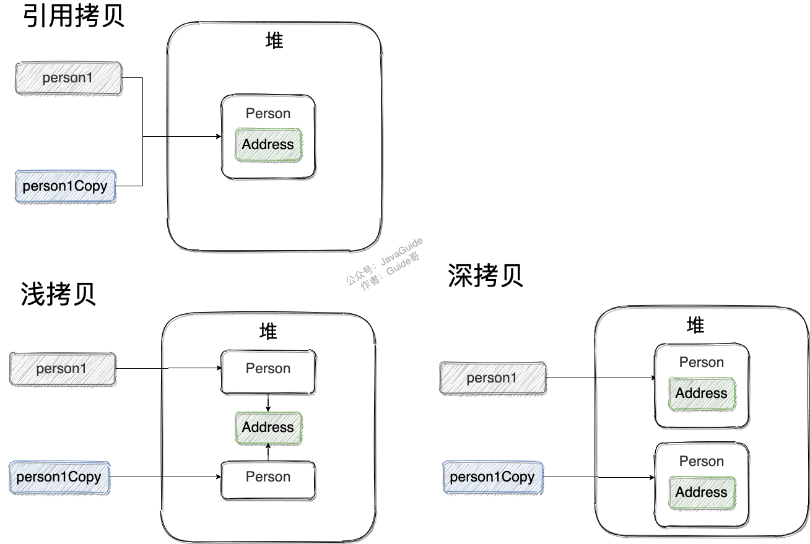
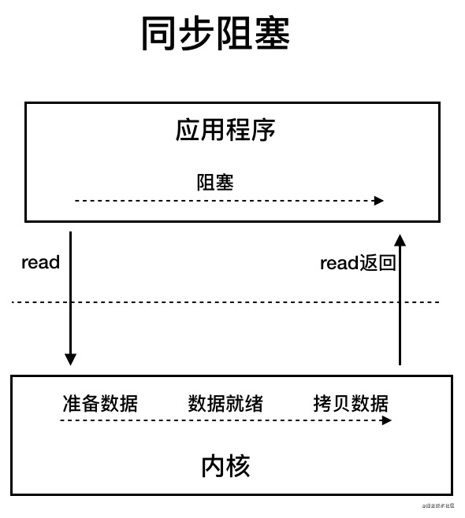
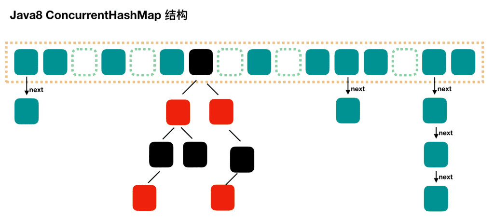
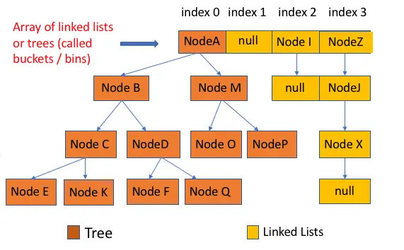

1 基础概念
JVM vs JRE vs JDK
- JVM
Java Virtual Machine（Java虚拟机）是一种能够执行Java bytecode的虚拟机，有针对不同操作系统的特定实现，目的是可以使用相同的字节码在不同的操作系统下都得到同样的运行结果，即所谓的“Write once, run anywhere”。
我们平时最常用的HotSpot VM只是JVM规范的一种实现，只要符合JVM规范，任何公司、组织或个人都可以开发自己的专属JVM。
- JRE
Java Runtime Environment（Java运行时环境）是运行已编译Java程序所需的内容集合，包括JVM，Java SE标准类库和其他一些基础构件。
- JDK
Java Development Kit是功能齐全的Java SDK，拥有JRE的一切，再加上编译器（javac）和其他的指令工具（比如javadoc），能够创建和编译程序。
Java bytecode
JVM可以理解的代码叫做Java字节码（即编译后生成的.class文件），它不面相任何特定的处理器或操作系统，只面向虚拟机，字节码一定程度上解决了解释性语言执行效率低的问题，又保留了解释性语言可以移植的特点。

上图中**.class -> 机器码**中，JVM类加载器首先加载字节码文件，然后通过解释器逐行解释执行，这也是传统解释性语言的特点，但是这样的执行速度相对比较慢。
事实上在程序中有些方法或代码块会被经常调用，这些代码段被称为热点代码，所以后面引进了JIT编译器（Just-In-Time Compilation），JIT属于运行时编译，第一次完成编译后会将字节码生成的机器码保存下来，下次可以直接使用，机器码的运行效率是高于Java解释器的，所以我们常说Java是编译与解释共存的语言。
2 基本语法
基本数据类型和包装类
Java有8种基本数据类型：
6种数字类型：
- 4种整数型：
byte、short、int、long - 2种浮点型：
float、double
- 4种整数型：
1种字符类型：
char1种布尔型：
boolean。
boolean的位数在官方文档里没有明确定义，依赖于JVM厂商的具体实现，逻辑上理解为占用1位。
Java的每种基本类型所占存储空间的大小不会像其他大多数语言那样随机器硬件架构的变化而变化,这种所占存储空间大小的不变性是Java程序比用其他大多数语言编写的程序更具可移植性的原因之一。
基本类型与包装类型
这八种基本类型都有对应的包装类分别为：Byte、Short、Integer、Long、Float、Double、Character、Boolean。
基本类型和包装类型的主要区别是：
- 作为成员变量的包装类型不赋值就是
null，而基本类型有默认值。 - 包装类型可用于泛型，而基本类型不可。
- 基本数据类型的局部变量存放在Java虚拟机栈中的局部变量表中，基本数据类型的成员变量（未被static修饰）存放在Java虚拟机的堆中。包装类型属于对象类型，我们知道几乎所有对象实例都存在于堆中。
- 相比于对象类型，基本数据类型占用的空间非常小。
为什么说是几乎所有对象实例呢？这是因为HotSpot虚拟机引入了JIT优化之后，会对对象进行逃逸分析，如果发现某一个对象并没有逃逸到方法外部，那么就可能通过标量替换来实现栈上分配，而避免堆上分配内存。
包装类型的缓存机制
Java基本数据类型的包装类型的大部分都用到了缓存机制来提升性能。
Byte, Short, Integer, Long这4种包装类默认创建了数值[-128，127]的相应类型的缓存数据，Character创建了数值在[0,127]范围的缓存数据，Boolean直接返回True or False。
两种浮点数类型的包装类Float, Double并没有实现缓存机制。
如果要使用超出对应范围值的包装类对象，构造器仍然会去创建新的对象，缓存的范围区间的大小只是在性能和资源之间的权衡。
Integer i1 = 40; // 使用缓存对象
Integer i2 = new Integer(40); // 创建新对象
System.out.println(i1==i2); // 输出false因此，所有整型包装类对象之间值的比较，全部使用equals方法比较。
自动装箱与拆箱
- 装箱：将基本类型用它们对应的包装类型包装起来；
- 拆箱：将包装类型转换为基本数据类型。
Integer i = 10; // 装箱, Integer i = Integer.valueOf(10)
int n = i; // 拆箱, int n = i.intValue();装箱其实就是调用了包装类的valueOf()方法，拆箱其实就是调用了xxxValue()方法。
注意：如果频繁拆装箱的话，也会严重影响系统的性能，我们应该尽量避免不必要的拆装箱操作。
字符型常量和字符串常量的区别
形式：字符常量是单引号引起的一个字符，字符串常量是双引号引起的0个或若干个字符。
含义：字符常量相当于一个整型值(ASCII值)，可以参加表达式运算；字符串常量代表一个地址值(引用类型，表示该字符串在内存中存放位置)。
占内存大小：字符常量只占2个字节（char在Java中）；字符串常量占若干个字节。
什么是可变长参数？
所谓可变长参数就是允许在调用方法时传入不定长度的参数。可变参数只能作为函数的最后一个参数，但其前面可以有也可以没有任何其他参数。
public static void method2(String arg1, String... args) {
//......
}遇到方法重载的情况，编译器会优先匹配固定参数而不是可变参数的方法。另外，Java的可变参数编译后实际会被转换成一个数组。
为什么Java中只有值传递？
形参&实参
方法的定义可能会用到参数（有参的方法），参数在程序语言中分为：
- 实参（实际参数）：用于传递给函数/方法的参数，必须有确定的值。
- 形参（形式参数）：用于定义函数/方法，接收实参，不需要有确定的值。
值传递&引用传递
程序设计语言将实参传递给方法（或函数）的方式分为两种：
- 值传递：方法接收的是实参值的拷贝，会创建副本。
- 引用传递：方法接收的直接是实参所引用的对象在堆中的地址，不会创建副本，对形参的修改将影响到实参。
很多程序设计语言（比如C++、Pascal)提供了两种参数传递的方式，不过，在Java中只有值传递。
为什么Java只有值传递？
案例1：传递基本类型参数
public static void main(String[] args) {
int num1 = 10;
int num2 = 20;
swap(num1, num2);
System.out.println("num1 = " + num1);
System.out.println("num2 = " + num2);
}
public static void swap(int a, int b) {
int temp = a;
a = b;
b = temp;
System.out.println("a = " + a);
System.out.println("b = " + b);
}输出：
a = 20
b = 10
num1 = 10
num2 = 20解析：
在swap()方法中，a、b的值进行交换，并不会影响到num1、num2。因为a、b的值，只是从num1、num2的复制过来的。也就是说a、b相当于num1、num2的副本，副本的内容无论怎么修改，都不会影响到原件本身。
案例2：传递引用类型参数1
public static void main(String[] args) {
int[] arr = { 1, 2, 3, 4, 5 };
System.out.println(arr[0]);
change(arr);
System.out.println(arr[0]);
}
public static void change(int[] array) {
// 将数组的第一个元素变为0
array[0] = 0;
}输出：
1
0
这里传递的还是值，不过，这个值是实参的地址！
也就是说change()的参数拷贝的是arr（实参）的地址，因此，它和arr指向的是同一个数组对象。这也就说明了为什么方法内部对形参的修改会影响到实参。
案例3 ：传递引用类型参数2
public class Person {
private String name;
// 省略构造函数、Getter&Setter方法
}
public static void main(String[] args) {
Person xiaoZhang = new Person("小张");
Person xiaoLi = new Person("小李");
swap(xiaoZhang, xiaoLi);
System.out.println("xiaoZhang:" + xiaoZhang.getName());
System.out.println("xiaoLi:" + xiaoLi.getName());
}
public static void swap(Person person1, Person person2) {
Person temp = person1;
person1 = person2;
person2 = temp;
System.out.println("person1:" + person1.getName());
System.out.println("person2:" + person2.getName());
}输出：
person1:小李
person2:小张
xiaoZhang:小张
xiaoLi:小李swap()的参数person1和person2只是拷贝的实参xiaoZhang和xiaoLi的地址。因此，person1和person2的互换只是拷贝的两个地址的互换罢了，并不会影响到实参xiaoZhang和xiaoLi。
Java 中将实参传递给方法（或函数）的方式是 值传递 ：
- 如果参数是基本类型的话，很简单，传递的就是基本类型的字面量值的拷贝，会创建副本。
- 如果参数是引用类型，传递的就是实参所引用的对象在堆中地址值的拷贝，同样也会创建副本。
3 面向对象
面向对象三大特征
- 封装（encapsulation）：封装是指把一个对象的状态信息（也就是属性）隐藏在对象内部，不允许外部对象直接访问对象的内部信息。但是可以提供一些可以被外界访问的方法来操作属性。
- 继承（inheritance）：使用已存在的类的定义作为基础建立新类的技术，新类的定义可以增加新的数据或新的功能，同时也拥有父类的功能，但不能选择性地继承父类。通过使用继承，可以快速地创建新的类，可以提高代码的重用，程序的可维护性，节省大量创建新类的时间，提高我们的开发效率。
- 子类拥有父类对象所有的属性和方法（包括私有属性和私有方法），但是父类中的私有属性和方法子类是无法访问，只是拥有。
- 子类可以拥有自己属性和方法，即子类可以对父类进行扩展。
- 子类可以用自己的方式实现父类的方法。
- 多态（Polymorphism）：一个对象具有多种的状态，具体表现为父类的引用指向子类的实例。
- 对象类型和引用类型之间具有继承（类）/实现（接口）的关系。
- 引用类型变量发出的方法调用的到底是哪个类中的方法，必须在程序运行期间才能确定。
- 多态不能调用“只在子类存在但在父类不存在”的方法。
- 如果子类重写了父类的方法，真正执行的是子类覆盖的方法，如果子类没有覆盖父类的方法，执行的是父类的方法。
成员变量与局部变量的区别
- 语法形式：成员变量在类中定义，而局部变量是在代码块、方法中定义的变量，或是方法的参数；成员变量可以被
public,private,static等修饰符所修饰，而局部变量不能被访问控制修饰符及static所修饰；但是，成员变量和局部变量都能被final所修饰。 - 存储方式：如果成员变量是使用
static修饰的，那么这个成员变量是属于类的，如果没有使用static修饰，这个成员变量是属于类的实例的；对象存在于堆内存，局部变量则存在于栈内存。 - 生存时间：成员变量是类或对象的一部分，它随着类或对象的创建而存在；而局部变量随着方法的调用而自动生成，随着方法的调用结束而消亡。
- 默认值：成员变量如果没有被赋初始值，则会自动以类型的默认值而赋值（但是被
final修饰的成员变量也必须显式地赋值），而局部变量则不会默认初始化，必须手动赋值后再进行使用。
重载与重写的区别
- 重载（overload）就是同样的一个方法能够根据输入数据的不同，做出不同的处理。
- 重写（override）就是当子类继承自父类的相同方法，输入数据一样，但要做出有别于父类的响应时，你就要覆盖父类方法。
重载：
- 发生阶段：编译阶段
- 使用范围：同一个类（或父类与子类之间）
- 方法名：必须相同
- 返回类型：可以不同
- 访问修饰符：可以不同
- 参数列表：必须不同（即可以参数类型不同、个数不同、顺序不同）
- 异常：可以不同
重写：
- 发生阶段：运行阶段
- 使用范围：子类
- 方法名：必须相同
- 返回类型：小于等于父类
- 访问修饰符：大于等于父类
- 参数列表：必须相同
- 异常：小于等于父类
对于重写，需要注意：
遵循「两同两小一大」：「两同」即方法名相同、形参列表相同；「两小」指的是子类方法返回值类型应比父类方法返回值类型更小或相等，子类方法声明抛出的异常类型应比父类方法声明抛出的异常类更小或相等；「一大」指的是子类方法的访问权限应比父类方法的访问权限更大或相等。
如果父类方法访问修饰符为
private/final/static则子类就不能重写该方法。构造方法无法被重写。
此外，对于重写的返回值类型：
- 如果方法的返回类型是void和基本数据类型，则返回值重写时不可修改。
- 但是如果方法的返回值是引用类型，重写时可以返回该引用类型的子类的。
静态方法为什么不能调用非静态成员?
静态方法是属于类的，在类加载的时候就会分配内存，可以通过类名直接访问。而非静态成员属于实例对象，只有在对象实例化之后才存在，需要通过类的实例对象去访问。
在类的非静态成员不存在的时候静态成员就已经存在了，此时调用在内存中还不存在的非静态成员，属于非法操作。
静态方法和实例方法的区别
- 调用方式
在外部调用静态方法时，可以使用类名.方法名的方式，也可以使用对象.方法名的方式，而实例方法只有后面这种方式。不过，需要注意的是一般不建议使用对象.方法名的方式来调用静态方法，这种方式非常容易造成混淆，事实上静态方法不属于类的某个对象而是属于这个类。
- 访问类成员的限制
静态方法在访问本类的成员时，只允许访问静态成员（即静态成员变量和静态方法），不允许访问实例成员（即实例成员变量和实例方法），而实例方法不存在这个限制。
接口和抽象类的共同点和区别
共同点：
- 都不能被实例化。
- 都可以包含抽象方法。
- 都可以有默认实现的方法（Java 8可以用
default关键字在接口中定义默认方法）。
区别：
- 接口主要用于对类的行为进行约束，你实现了某个接口就具有了对应的行为；抽象类主要用于代码复用，强调的是所属关系。
- 一个类只能继承一个类；但是一个类可以实现多个接口。
- 接口中的成员变量只能是
public static final类型的，不能被修改且必须有初始值；而抽象类的成员变量可以有默认初始值，可在子类中被重新定义，也可被重新赋值。
深拷贝、浅拷贝、引用拷贝
浅拷贝：浅拷贝会在堆上创建一个新的对象（区别于引用拷贝的一点），不过，如果原对象内部的属性是引用类型的话，浅拷贝会直接复制内部对象的引用地址，也就是说拷贝对象和原对象共用同一个内部对象。
深拷贝：深拷贝会完全复制整个对象，包括这个对象所包含的内部对象。
引用拷贝：两个不同的引用指向同一个对象。

4 常用类
Object类
Object类是所有类的父类，主要提供方法有：
/**
* native 方法，用于返回当前运行时对象的 Class 对象，使用了 final 关键字修饰，故不允许子类重写。
*/
public final native Class<?> getClass()
/**
* native 方法，用于返回对象的哈希码，主要使用在哈希表中，比如 JDK 中的HashMap。
*/
public native int hashCode()
/**
* 用于比较 2 个对象的内存地址是否相等，String 类对该方法进行了重写以用于比较字符串的值是否相等。
*/
public boolean equals(Object obj)
/**
* naitive 方法，用于创建并返回当前对象的一份拷贝。
*/
protected native Object clone() throws CloneNotSupportedException
/**
* 返回类的名字实例的哈希码的 16 进制的字符串。建议 Object 所有的子类都重写这个方法。
*/
public String toString()
/**
* native 方法，并且不能重写。唤醒一个在此对象监视器上等待的线程(监视器相当于就是锁的概念)。如果有多个线程在等待只会任意唤醒一个。
*/
public final native void notify()
/**
* native 方法，并且不能重写。跟 notify 一样，唯一的区别就是会唤醒在此对象监视器上等待的所有线程，而不是一个线程。
*/
public final native void notifyAll()
/**
* native方法，并且不能重写。暂停线程的执行。注意：sleep 方法没有释放锁，而 wait 方法释放了锁 ，timeout 是等待时间。
*/
public final native void wait(long timeout) throws InterruptedException
/**
* 多了 nanos 参数，这个参数表示额外时间（以毫微秒为单位，范围是 0-999999）。 所以超时的时间还需要加上 nanos 毫秒。。
*/
public final void wait(long timeout, int nanos) throws InterruptedException
/**
* 跟之前的2个wait方法一样，只不过该方法一直等待，没有超时时间这个概念
*/
public final void wait() throws InterruptedException
/**
* 实例被垃圾回收器回收的时候触发的操作
*/
protected void finalize() throws Throwable { }==和equals()的区别
==对于基本类型和引用类型的作用效果是不同的：
- 对于基本数据类型，
==比较的是值。 - 对于引用数据类型，
==比较的是对象的内存地址。
Java只有值传递，所以其实对于==来说，不管是比较基本数据类型，还是引用数据类型的变量，其本质比较的都是值，只是引用类型变量存的值是对象的地址。
equals()不能用于判断基本数据类型的变量，只能用来判断两个对象是否相等。equals()方法存在于Object类中，而Object类是所有类的直接或间接父类，因此所有的类都有equals()方法。
Object类equals()方法：
public boolean equals(Object obj) {
return (this == obj);
}equals()方法存在两种使用情况：
- 类没有重写：通过
equals()比较该类的两个对象时，等价于通过==比较这两个对象，因为使用的默认是Object类equals()方法。 - 类重写了
equals()方法 ：一般我们都重写equals()方法来比较两个对象中的属性是否相等；若它们的属性相等，则返回true。
比如String中的equals方法是被重写过的，当创建String类型的对象时，虚拟机会在常量池中查找有没有已经存在的值和要创建的值相同的对象，如果有就把它赋给当前引用。如果没有就在常量池中重新创建一个String对象。
String类equals()方法：
public boolean equals(Object anObject) {
if (this == anObject) {
return true;
}
if (anObject instanceof String) {
String anotherString = (String)anObject;
int n = value.length;
if (n == anotherString.value.length) {
char v1[] = value;
char v2[] = anotherString.value;
int i = 0;
while (n-- != 0) {
if (v1[i] != v2[i])
return false;
i++;
}
return true;
}
}
return false;
}hashCode()
hashCode()的作用是获取hash code（int 整数），也称为散列码，作用是确定该对象在哈希表中的索引位置。
hashCode()定义在JDK的Object类中，这就意味着Java中的任何类都包含有hashCode()方法。另外需要注意的是Object的hashCode()方法是native方法，也就是用C语言或C++实现的，该方法通常用来将对象的内存地址转换为整数之后返回。
散列表Hash Table存储的是键值对（key-value），它的特点是能根据key快速的检索出对应的value，使用原理就是hash code。
hashCode()和equals()都是用于比较两个对象是否相等，为什么JDK还要同时提供这两个方法呢？
这是因为在一些容器（比如HashMap、HashSet）中，有了hashCode()之后，判断元素是否在对应容器中的效率会更高！比如《Head First Java》中写道：
当你把对象加入HashSet时，HashSet会先计算对象的hashCode值来判断对象加入的位置，同时也会与其他已经加入的对象的hashCode值作比较，如果没有相符的hashCode，HashSet会假设对象没有重复出现。但是如果发现有相同hashCode值的对象，这时会调用equals()方法来检查hashCode相等的对象是否真的相同。如果两者相同，HashSet就不会让其加入操作成功。如果不同的话，就会重新散列到其他位置。这样我们就大大减少了equals的次数，相应就大大提高了执行速度。
那为什么不只提供 hashCode() 方法呢？
这是因为两个对象的hashCode值相等并不代表两个对象就相等。
那为什么两个对象有相同的hashCode值，它们也不一定是相等的？
因为hashCode()所使用的哈希算法也许刚好会让多个对象传回相同的哈希值。越糟糕的哈希算法越容易碰撞，但这也与数据值域分布的特性有关（所谓哈希碰撞也就是指的是不同的对象得到相同的hashCode)。
总结下来就是 ：
- 如果两个对象的hashCode值相等，那这两个对象不一定相等（可能是哈希碰撞）。
- 如果两个对象的hashCode值相等并且equals()方法也返回 true，我们才认为这两个对象相等。
- 如果两个对象的hashCode值不相等，我们就可以直接认为这两个对象不相等。
什么重写equals()时必须重写hashCode()方法？
因为按照hash code的使用规定：两个相等对象的hashCode值必须也相等。也就是说如果equals方法判断两个对象是相等的，那这两个对象的hashCode值也要相等。
但是如果重写equals()时没有重写hashCode()方法的话，就可能会导致equals方法判断是相等的两个对象，hashCode值却不相等。
因为此时hashCode是调用的父类即Object类中的hashCode()，该方法把对象在内存中的地址转换为int。
- 比如创建了两个属性值相同的对象，它们的地址经过hashCode方法转换后生成了各自的hash code，且不相同；
- 在放入基于hash的容器比如HashSet中时，这两个逻辑上相同的对象因为hash code不相等就都被放入容器，显然是不符合规范的。
String类
String、StringBuffer、StringBuilder的区别？
- 可变性
String是不可变的。
StringBuilder与StringBuffer都继承自AbstractStringBuilder类，在AbstractStringBuilder也使用字符数组保存字符串，但没有使用final和private关键字修饰，因此内容是可改变的。
- 线程安全性
String中的对象是不可变的，也就可以理解为常量，线程安全。
AbstractStringBuilder定义了一些字符串的基本操作，如expandCapacity()、append()、insert()、indexOf()，StringBuffer对这些方法加了同步锁，所以是线程安全的。StringBuilder并没有加同步锁，所以是非线程安全的。
- 性能
String是不可变的，每次对字符串内容进行改变的时候，都会生成一个新的String对象，然后将指针指向新的String对象。
StringBuffer每次都会对StringBuffer对象本身进行操作，而不是生成新的对象并改变对象引用。相同情况下使用StringBuilder相比使用 StringBuffer仅能获得10%~15%左右的性能提升，但却要冒多线程不安全的风险。
对于三者使用的总结：
- 操作少量的数据: 适用
String - 单线程操作字符串缓冲区下操作大量数据: 适用
StringBuilder - 多线程操作字符串缓冲区下操作大量数据: 适用
StringBuffer
String 为什么是不可变的?
public final class String implements java.io.Serializable, Comparable<String>, CharSequence {
private final char value[];
//...
}String类中使用final关键字修饰字符数组来保存字符串，被final关键字修饰的类不能被继承，修饰的方法不能被重写，修饰的变量是基本数据类型则值不能改变，修饰的变量是引用类型则不能再指向其他对象。但是final关键字修饰char数组并不是String不可变的根本原因，因为这里是final修饰引用类型变量的情况，虽然这个引用类型变量不能再指向其他对象，但是其内部元素却可以被修改。
String真正不可变的原因有：
- 保存字符串的数组被
final修饰且为private的，并且String类没有提供/暴露修改这个字符串的方法。 - String类被final修饰导致其不能被继承，进而避免了子类破坏String的不可变性。
补充：在Java 9之后，String、StringBuilder与StringBuffer的实现改用byte数组存储字符串。
public final class String implements java.io.Serializable,Comparable<String>, CharSequence {
// @Stable 注解表示变量最多被修改一次，称为“稳定的”。
@Stable
private final byte[] value;
}
abstract class AbstractStringBuilder implements Appendable, CharSequence {
byte[] value;
}新版的String其实支持两个编码方案：Latin-1和UTF-16。如果字符串中包含的汉字没有超过Latin-1可表示范围内的字符，那就会使用Latin-1作为编码方案。Latin-1 编码方案下，byte占1个字节(8 位)，char占2个字节（16位），byte相较 char节省一半的内存空间。JDK官方表示绝大部分字符串对象只包含Latin-1就可编码的字符。如果字符串中包含的汉字超过Latin-1可表示范围内的字符，byte就和char所占用的空间是一样的了。
字符串常量池的作用了解吗？
字符串常量池是JVM为了提升性能和减少内存消耗针对字符串（String 类）专门开辟的一块区域，主要目的是为了避免字符串的重复创建。
// 在堆中创建字符串对象”ab“
// 将字符串对象”ab“的引用保存在字符串常量池中
String aa = "ab";
// 直接返回字符串常量池中字符串对象”ab“的引用
String bb = "ab";
System.out.println(aa==bb); // trueString s1 = new String("abc");会创建 1 或 2 个字符串对象。这取决于常亮翅中是否存在”abc”这个对象的引用。
intern方法有什么作用?
String.intern()是一个native方法，其作用是将指定的字符串对象的引用保存在字符串常量池中，可以简单分为两种情况：
- 如果字符串常量池中保存了对应的字符串对象的引用，就直接返回该引用。
- 如果字符串常量池中没有保存对应的字符串对象的引用，那就在常量池中创建一个指向该字符串对象的引用并返回。
// 在堆中创建字符串对象”Java“
// 将字符串对象”Java“的引用保存在字符串常量池中
String s1 = "Java";
// 直接返回字符串常量池中字符串对象”Java“对应的引用
String s2 = s1.intern();
// 会在堆中在单独创建一个字符串对象
String s3 = new String("Java");
// 直接返回字符串常量池中字符串对象”Java“对应的引用
String s4 = s3.intern();
// s1 和 s2 指向的是堆中的同一个对象
System.out.println(s1 == s2); // true
// s3 和 s4 指向的是堆中不同的对象
System.out.println(s3 == s4); // false
// s1 和 s4 指向的是堆中的同一个对象
System.out.println(s1 == s4); //trueString 类型的变量和常量做“+”运算时发生了什么？
String str1 = "str";
String str2 = "ing";
String str3 = "str" + "ing";
String str4 = str1 + str2;
String str5 = "string";
System.out.println(str3 == str4); // false
System.out.println(str3 == str5); // true
System.out.println(str4 == str5); // false对于编译期可以确定值的字符串，也就是常量字符串，jvm会将其存入字符串常量池。并且字符串常量拼接得到的字符串常量在编译阶段就已经被存放字符串常量池，这个得益于编译器的优化。
在编译过程中，Javac编译器会进行一个叫做常量折叠（Constant Folding）的代码优化。常量折叠会把常量表达式的值求出来作为常量嵌在最终生成的代码中，这是Javac编译器会对源代码做的极少量优化措施之一（代码优化几乎都在即时编译器中进行）。
因此对于String str3 = "str" + "ing";编译器会优化成String str3 = "string";。
但并不是所有的常量都会进行折叠，只有编译器在程序编译期就可以确定值的常量才可以，主要包括：
- 基本数据类型以及字符串常量。
- final修饰的基本数据类型变量或字符串变量。
- 字符串通过
+拼接得到的字符串、基本数据类型之间算数运算（加减乘除）、基本数据类型的位运算（<<、>>、>>> ）。
引用的值在程序编译期是无法确定的，编译器无法对其进行优化。
对象引用和+的字符串拼接方式，实际上是通过StringBuilder调用append()方法实现的，拼接完成之后调用toString()得到一个String对象 。
String str4 = new StringBuilder().append(str1).append(str2).toString();我们在平时写代码的时候，尽量避免多个String对象拼接，因为这样会重新创建对象。如果需要改变字符串的话，可以使用StringBuilder或StringBuffer。
不过字符串变量使用final关键字声明之后，可以让编译器当做常量来处理，编译器在程序编译期就可以确定它的值，其效果就相当于访问常量。
final String str1 = "str";
final String str2 = "ing";
// 下面两个表达式其实是等价的
String c = "str" + "ing"; // 常量池中的对象
String d = str1 + str2; // 常量池中的对象
System.out.println(c == d);// true如果，编译器在运行时才能知道其确切值的话，就无法对其优化。
final String str1 = "str";
final String str2 = getStr(); // 运行时才能确定的值
String c = "str" + "ing";// 常量池中的对象
String d = str1 + str2; // 在堆上创建的新的对象
System.out.println(c == d);// false
public static String getStr() {
return "ing";
}BigDecimal 详解
BigDecimal可以实现对浮点数的运算，不会造成精度丢失。通常情况下大部分需要浮点数精确运算结果的业务场景（比如涉及到钱的场景）都是通过 BigDecimal来做的。
float a = 2.0f - 1.9f;
float b = 1.8f - 1.7f;
System.out.println(a);// 0.100000024
System.out.println(b);// 0.099999905
System.out.println(a == b);// false为什么浮点数运算会有精度丢失风险？
这个和计算机保存浮点数的机制有很大关系。计算机是二进制的，而且计算机在表示一个数字时宽度是有限的，无限循环的小数存储在计算机时只能被截断，导致小数精度发生损失的情况。
就比如说十进制下的0.2就没办法精确转换成二进制小数：
// 0.2转换为二进制数的过程是断乘以2，直到不存在小数为止，
// 在这个计算过程中，得到的整数部分从上到下排列就是二进制的结果。
0.2 * 2 = 0.4 -> 0
0.4 * 2 = 0.8 -> 0
0.8 * 2 = 1.6 -> 1
0.6 * 2 = 1.2 -> 1
0.2 * 2 = 0.4 -> 0（发生循环）
...BigDecimal的用处
《阿里巴巴Java开发手册》中提到：浮点数之间的等值判断，基本数据类型不能用==来比较，包装数据类型不能用 equals 来判断。这是因为上述提到的精度丢失问题，解决办法是使用BigDecimal。
BigDecimal a = new BigDecimal("1.0");
BigDecimal b = new BigDecimal("0.9");
BigDecimal c = new BigDecimal("0.8");
BigDecimal x = a.subtract(b);
BigDecimal y = b.subtract(c);
System.out.println(x); /* 0.1 */
System.out.println(y); /* 0.1 */
System.out.println(Objects.equals(x, y)); /* true */5 异常

Exception和Error有什么区别？
在Java中，所有的异常都有一个共同的祖先java.lang.Throwable。Throwable类有两个重要的子类:
Exception：程序本身可以处理的异常，可以通过catch来进行捕获。Exception又可以分为Checked Exception（受检查异常，必须处理）和Unchecked Exception（不受检查异常，可以不处理）。Error：Error属于程序无法处理的错误 ，不建议通过catch捕获。例如Java虚拟机运行错误（Virtual MachineError）、虚拟机内存不够错误(OutOfMemoryError)、类定义错误（NoClassDefFoundError）等 。这些异常发生时，Java 虚拟机（JVM）一般会选择终止线程。
Checked Exception和Unchecked Exception有什么区别？
Checked Exception（受检查异常）：Java代码在编译过程中，如果没有被catch或者throws关键字处理的话，就没办法通过编译。
- 除了
RuntimeException及其子类以外，其他的Exception类及其子类都属于受检查异常。 - 常见的受检查异常有：IO相关的异常、ClassNotFoundException、SQLException…。
Unchecked Exception（不受检查异常）：Java代码在编译过程中即使不处理也可以正常通过编译。RuntimeException及其子类都统称为非受检查异常，常见的有：
- NullPointerException(空指针错误)
- IllegalArgumentException(参数错误比如方法入参类型错误)
- NumberFormatException（字符串转换为数字格式错误，IllegalArgumentException的子类）
- ArrayIndexOutOfBoundsException（数组越界错误）
- ClassCastException（类型转换错误）
- ArithmeticException（算术错误）
- SecurityException （安全错误比如权限不够）
- UnsupportedOperationException(不支持的操作错误比如重复创建同一用户)
- ……
Throwable 类常用方法有哪些？
String getMessage()：返回异常发生时的简要描述。String toString()：返回异常发生时的详细信息。String getLocalizedMessage()：返回异常对象的本地化信息。使用Throwable的子类覆盖这个方法，可以生成本地化信息。如果子类没有覆盖该方法，则该方法返回的信息与getMessage()返回的结果相同。void printStackTrace()：在控制台上打印 Throwable 对象封装的异常信息。
finally
finally：无论是否捕获或处理异常，finally块里的语句都会被执行。当在try块或catch块中遇到return语句时，finally语句块将在方法返回之前被执行。
注意：不要在finally语句块中使用return！
- 当try语句和finally语句中都有return语句时，try语句块中的return语句会被忽略。这是因为try语句中的return返回值会先被暂存在一个本地变量中，当执行到finally语句中的return之后，这个本地变量的值就变为了finally语句中的return返回值。
public static void main(String[] args) {
System.out.println(f(2));
}
public static int f(int value) {
try {
return value * value;
} finally {
if (value == 2) {
return 0;
}
}
}
// 输出：0事实上finally中的代码也不是一定会执行！在某些情况下，finally中的代码不会被执行，比如finally之前虚拟机被终止。
try {
System.out.println("Try to do something");
throw new RuntimeException("RuntimeException");
} catch (Exception e) {
System.out.println("Catch Exception -> " + e.getMessage());
// 终止当前正在运行的Java虚拟机
System.exit(1);
} finally {
System.out.println("Finally");
}
// 输出
// Try to do something
// Catch Exception -> RuntimeException另外，在以下2种特殊情况下，finally块的代码也不会被执行：
- 程序所在的线程死亡。
- 关闭CPU。
如何使用try-with-resources代替try-catch-finally？
适用范围（资源的定义）：任何实现java.lang.AutoCloseable或者java.io.Closeable的对象。
关闭资源和finally块的执行顺序：在try-with-resources语句中，任何catch或finally块在声明的资源关闭后运行。
// 读取文本文件的内容
// 使用try-catch-finally
Scanner scanner = null;
try {
scanner = new Scanner(new File("D://read.txt"));
while (scanner.hasNext()) {
System.out.println(scanner.nextLine());
}
} catch (FileNotFoundException e) {
e.printStackTrace();
} finally {
if (scanner != null) {
scanner.close();
}
}
// 使用try-with-resources
try (Scanner scanner = new Scanner(new File("test.txt"))) {
while (scanner.hasNext()) {
System.out.println(scanner.nextLine());
}
} catch (FileNotFoundException fnfe) {
fnfe.printStackTrace();
}
// 如果有多个资源使用“;”分隔
try (BufferedInputStream bin = new BufferedInputStream(new FileInputStream(new File("test.txt")));
BufferedOutputStream bout = new BufferedOutputStream(new FileOutputStream(new File("out.txt")))) {
int b;
while ((b = bin.read()) != -1) {
bout.write(b);
}
}
catch (IOException e) {
e.printStackTrace();
}异常使用有哪些需要注意的地方？
- 不要把异常定义为静态变量，因为这样会导致异常栈信息错乱。每次手动抛出异常，我们都需要手动new一个异常对象抛出。
- 抛出的异常信息一定要有意义。
- 建议抛出更加具体的异常比如字符串转换为数字格式错误的时候应该抛出NumberFormatException而不是其父类IllegalArgumentException。
- 使用日志打印异常之后就不要再抛出异常了（两者不要同时存在一段代码逻辑中）。
- ……
6 I/O
获取用键盘输入常用的两种方法
方法 1：通过Scanner
Scanner input = new Scanner(System.in);
String s = input.nextLine();
input.close();方法 2：通过BufferedReader
BufferedReader input = new BufferedReader(new InputStreamReader(System.in));
String s = input.readLine();Java中I/O流分为几种?
- 按照流的流向分，可以分为输入流和输出流；
- 按照操作单元划分，可以划分为字节流和字符流；
- 按照流的角色划分为节点流和处理流。
Java IO流共涉及40多个类，这些类看上去很杂乱，但实际上很有规则，而且彼此之间存在非常紧密的联系。Java IO流的40多个类都是从如下4个抽象类基类中派生出来的：
- InputStream/Reader: 所有的输入流的基类，前者是字节输入流，后者是字符输入流。
- OutputStream/Writer: 所有输出流的基类，前者是字节输出流，后者是字符输出流。


I/O模型详解
I/O（Input/Outpu） 即输入／输出。
先从计算机结构的角度来解读一下I/O。根据冯·诺依曼结构，计算机结构分为5大部分：运算器、控制器、存储器、输入设备、输出设备。

- 输入设备（比如键盘）和输出设备（比如显示器）都属于外部设备。网卡、硬盘这种既可以属于输入设备，也可以属于输出设备。
- 输入设备向计算机输入数据，输出设备接收计算机输出的数据。
- 从计算机结构的视角来看的话，I/O描述了计算机系统与外部设备之间通信的过程。
再先从应用程序的角度来解读一下I/O。
- 为了保证操作系统的稳定性和安全性，一个进程的地址空间划分为用户空间（User space）和内核空间（Kernel space）。
- 平常运行的应用程序都是运行在用户空间，只有内核空间才能进行系统态级别的资源有关的操作，比如文件管理、进程通信、内存管理等等。也就是说想要进行I/O操作，一定是要依赖内核空间的能力。
- 但是，用户空间的程序不能直接访问内核空间。
- 因此当想要执行I/O操作时，由于没有执行这些操作的权限，只能发起系统调用请求操作系统帮忙完成。
- 应用程序对操作系统的内核发起I/O调用（系统调用），操作系统负责的内核执行具体的I/O操作。也就是说，我们的应用程序实际上只是发起了I/O操作的调用而已，具体I/O的执行是由操作系统的内核来完成的。
当应用程序发起I/O调用后，会经历两个步骤：
- 内核等待I/O设备准备好数据。
- 内核将数据从内核空间拷贝到用户空间。
有哪些常见的I/O模型？
UNIX 系统下，I/O模型一共有5种：同步阻塞I/O、同步非阻塞I/O、I/O多路复用、信号驱动I/O和异步I/O。
Java中3种常见I/O模型
BIO (Blocking I/O)
BIO属于同步阻塞IO模型。
同步阻塞IO模型中，应用程序发起read()调用后，会一直阻塞，直到内核把数据拷贝到用户空间。

在客户端连接数量不高的情况下，是没问题的。但是当面对十万甚至百万级连接的时候，传统的BIO模型是无能为力的。因此需要一种更高效的I/O处理模型来应对更高的并发量。
NIO (Non-blocking/New I/O)
Java中的NIO于Java 1.4引入，对应java.nio包，提供了Channel ，Selector，Buffer等抽象。NIO中的N可以理解为Non-blocking，不单纯是New。它是支持面向缓冲的，基于通道的I/O操作方法，对于高负载、高并发的（网络）应用，应使用NIO。
Java中的NIO可以看作是I/O多路复用模型。也有很多人认为NIO属于同步非阻塞I/O模型。
同步非阻塞I/O模型中，应用程序会一直发起read()调用，这个期间如果数据还没准备好，该线程不会阻塞，直到数据就绪后，read()调用生效，开始把数据从内核空间拷贝到用户空间，这个过程线程会阻塞直到拷贝完成。
相比于同步阻塞I/O模型，同步非阻塞I/O模型确实有了很大改进：通过轮询操作，避免了一直阻塞。
但是这种I/O模型同样存在问题：应用程序不断进行I/O系统调用轮询数据是否已经准备好的过程十分消耗CPU资源。
I/O多路复用模型中，线程首先发起select()调用，询问内核数据是否准备就绪，等内核把数据准备好了，用户线程再发起read()调用，read调用的过程（数据从内核空间 -> 用户空间）还是阻塞的。
目前支持I/O多路复用的系统调用有select()，epoll()等等：
- select调用：内核提供的系统调用，它支持一次查询多个系统调用的可用状态，几乎所有的操作系统都支持。
- epoll调用：linux 2.6内核，属于select调用的增强版本，优化了I/O的执行效率。
I/O多路复用模型，通过减少无效的系统调用，减少了对CPU资源的消耗。
Java中的NIO，有一个非常重要的选择器Selector的概念，也可以被称为多路复用器。通过它，只需要一个线程便可以管理多个客户端连接，当客户端数据到了之后才会为其服务。
AIO (Asynchronous I/O)
AIO也就是NIO2，Java 7中引入，是异步I/O模型。
异步I/O是基于事件和回调机制实现的，也就是应用操作之后会直接返回，不会堵塞在那里，当后台处理完成，操作系统会通知相应的线程进行后续的操作。

目前来说AIO的应用还不是很广泛。Netty之前也尝试使用过 AIO不过又放弃了，这是因为Netty使用了AIO之后，在Linux系统上的性能并没有多少提升。
Java序列化详解
什么是序列化、反序列化?
如果我们需要持久化Java对象比如将Java对象保存在文件中，或者在网络传输Java对象时，都需要用到序列化：
- 序列化：将数据结构或对象转换成二进制字节流的过程。
- 反序列化：将在序列化过程中所生成的二进制字节流转换成数据结构或者对象的过程。
序列化的主要目的是通过网络传输对象或者说是将对象存储到文件系统、数据库、内存中。
Java序列化中如果有些字段不想进行序列化怎么办？
对于不想进行序列化的变量，使用transient关键字修饰。
transient关键字的作用是：
- 阻止实例中那些用此关键字修饰的的变量序列化；
- 当对象被反序列化时，被transient修饰的变量值不会被恢复。
关于transient还有几点注意：
transient只能修饰变量，不能修饰类和方法。transient修饰的变量，在反序列化后变量值将会被置成类型的默认值。例如，如果是修饰int类型，那么反序列后结果就是0。static变量因为不属于任何对象，所以无论有没有transient关键字修饰，均不会被序列化。
实际开发中有哪些用到序列化和反序列化的场景？
- 对象在进行网络传输（比如远程方法调用RPC的时候）之前需要先被序列化，接收到序列化的对象之后需要再进行反序列化。
- 将对象存储到文件中的时候需要进行序列化，将对象从文件中读取出来需要进行反序列化。
- 将对象存储到缓存数据库（如Redis）时需要用到序列化，将对象从缓存数据库中读取出来需要反序列化。
常见序列化协议对比
JDK自带的序列化方式一般不会用，因为序列化效率低并且部分版本有安全漏洞。比较常用的序列化协议有Hessian、Kyro、Protostuff。
下面提到的都是基于二进制的序列化协议，像JSON和XML这种属于文本类序列化方式，虽然可读性比较好，但是性能较差，一般不会选择。
JDK 自带的序列化方式
JDK自带的序列化，只需实现java.io.Serializable接口即可。
@AllArgsConstructor
@NoArgsConstructor
@Getter
@Builder
@ToString
public class RpcRequest implements Serializable {
private static final long serialVersionUID = 1905122041950251207L;
private String requestId;
private String interfaceName;
private String methodName;
private Object[] parameters;
private Class<?>[] paramTypes;
private RpcMessageTypeEnum rpcMessageTypeEnum;
}序列化号serialVersionUID的作用是版本控制。序列化的时候serialVersionUID也会被写入二级制序列，当反序列化时会检查serialVersionUID是否和当前类的serialVersionUID一致。如果serialVersionUID不一致则会抛出InvalidClassException异常。强烈推荐每个序列化类都手动指定其serialVersionUID，如果不手动指定，那么编译器会动态生成默认的序列化号。
我们很少或者说几乎不会直接使用这个序列化方式，主要原因有两个：
- 不支持跨语言调用：如果调用的是其他语言开发的服务的时候就不支持了。
- 性能差：相比于其他序列化框架性能更低，主要原因是序列化之后的字节数组体积较大，导致传输成本加大。
7 反射
Reflection（反射)是被视为动态语言的关键，反射机制允许程序在执行期借助于Reflection API取得任何类的内部信息，并能直接操作任意对象的内部属性及方法。
相关API：
- java.lang.Class -> 反射的源头
- java.lang.reflect.Method
- java.lang.reflect.Field
- java.lang.reflect.Constructor
- …
反射的作用
反射机制是在运行状态中，对于任意一个类，都能够知道这个类的所有属性和方法；对于任意一个对象，都能够调用它的任意一个方法和属性；这种动态获取的信息以及动态调用对象的方法的功能称为java语言的反射机制。
反射主要用来：
- 在运行时判断任意一个对象所属的类；
- 在运行时构造任意一个类的对象；
- 在运行时判断任意一个类所具有的成员变量和方法；
- 在运行时调用任意一个对象的方法；
- 实现动态代理。
反射的缺点
- 性能问题：反射包括了一些动态类型（多态，运行时才能确定其具体的类型），所以 JVM 无法对这些代码进行优化，因此反射操作的效率要比那些非反射操作低得多。
- 安全问题：由于反射允许代码执行一些在正常情况下不被允许的操作，比如访问私有的属性和方法，所以使用反射破坏了面向对象的封装特性，会产生安全问题。
类的加载过程
- 程序经过javac.exe命令以后，会生成一个或多个字节码文件(.class结尾)。
- 接着我们使用java.exe命令对某个字节码文件进行解释运行。相当于将某个字节码文件加载到内存中。此过程就称为类的加载。
- 加载到内存中的类，我们就称为运行时类，此运行时类，就作为Class的一个实例。换句话说，Class的实例就对应着一个运行时类。
- 加载到内存中的运行时类，会缓存一定的时间。在此时间之内，我们可以通过不同的方式来获取此运行时类。
获取Class实例的几种方式
//方式一：调用运行时类的属性：.class
Class clazz1 = Person.class;
System.out.println(clazz1);
//方式二：通过运行时类的对象, 调用getClass()
Person p1 = new Person();
Class clazz2 = p1.getClass();
System.out.println(clazz2);
//方式三：调用Class的静态方法：forName(String classPath)
Class clazz3 = Class.forName("com.atguigu.java.Person");
// clazz3 = Class.forName("java.lang.String");
System.out.println(clazz3);
System.out.println(clazz1 == clazz2);
System.out.println(clazz1 == clazz3);
//方式四：使用类的加载器：ClassLoader (了解)
ClassLoader classLoader = ReflectionTest.class.getClassLoader();
Class clazz4 = classLoader.loadClass("com.atguigu.java.Person");
System.out.println(clazz4);
System.out.println(clazz1 == clazz4);代理模式和动态代理
什么是代理
代理模式（Proxy Pattern）是常用的Java设计模式，特征是代理类与被代理类有同样的接口，代理类主要负责为被代理类预处理消息、过滤消息、把消息转发给被代理类，以及事后处理消息等。
代理类与被代理类之间通常会存在关联关系，一个代理类的对象与一个被代理类的对象关联，代理类的对象本身并不真正实现服务，而是通过调用被代理类对象的相关方法，来提供特定的服务。
代理模式在生活中很常见，比如明星都有经纪人，打官司要找律师，买房会找房产中介，这些都是代理模式的实例。
代理模式
- 用户只关心接口功能，而不在乎谁提供了功能。比如上图中接口是
Subject。 - 接口真正实现者即被代理类是上图的
RealSubject，但是它不与用户直接接触，而是通过代理被用户使用。 - 代理类就是上图中的
Proxy，由于它实现了Subject接口，所以它也能够直接与用户接触。 - 用户调用
Proxy的时候，Proxy内部调用了RealSubject。所以Proxy是中介者，它还可以增强RealSubject操作。 - 代理又可以分为静态代理和动态代理两种。
静态代理
场景假设：电影是电影公司委托给影院进行播放的，但是影院可以在播放电影之前或之后，产生一些自己的经济收益，比如提供按摩椅，娃娃机，卖爆米花、饮料，在影片开始结束阶段都会播放广告等。
播放电影的接口：
public interface Movie {
void play();
}实现了该接口，放映《美国队长》的被代理类：
public class CaptainAmericaMovie implements Movie {
@Override
public void play() {
System.out.println("普通影厅正在播放的电影是《美国队长》");
}
}实现了该接口，电影院放映电影的代理类：
public class MovieStaticProxy implements Movie {
Movie movie;
public MovieStaticProxy(Movie movie) {
this.movie = movie;
}
@Override
public void play() {
playStart();
movie.play();
playEnd();
}
public void playStart() {
System.out.println("电影开始前正在播放广告");
}
public void playEnd() {
System.out.println("电影结束了，接续播放广告");
}
}测试类：
public class StaticProxyTest {
public static void main(String[] args) {
Movie captainAmericaMovie = new CaptainAmericaMovie();
Movie movieStaticProxy = new MovieStaticProxy(captainAmericaMovie);
movieStaticProxy.play();
}
}运行结果：
电影开始前正在播放广告
正在播放的电影是《美国队长》
电影结束了，接续播放广告通过上述过程可以发现代理模式可以在不修改被代理对象的基础上，通过扩展代理类，进行一些功能的附加与增强。值得注意的是，代理类和被代理类应该共同实现一个接口，或者是共同继承某个类。
之所以称为静态代理，是因为在代理类中指定了实现的接口和使用的对象类型，比如上面的Movie,这个类型是实现约定好的。
优点：
- 代理模式在客户端与目标对象之间起到一个中介作用和保护目标对象的作用。
- 代理对象可以扩展目标对象的功能。
- 代理模式能将客户端与目标对象分离，在一定程度上降低了系统的耦合度。
缺点：
- 代理对象需要与被代理对象实现一样的接口，意味着不同的接口就要对应不同的代理类，导致出现很多代理类。同时，一旦接口增加方法，代理类与被代理类都要维护，十分繁琐。
JDK动态代理
与静态代理类对照的是动态代理类，动态代理类的字节码在程序运行时由Java反射机制动态生成，无需程序员手工编写它的源代码。
动态代理类不仅简化了编程工作，而且提高了软件系统的可扩展性，因为Java反射机制可以生成任意类型的动态代理类。java.lang.reflect包中的 Proxy类和InvocationHandler接口提供了生成动态代理类的能力。
场景假设：刚看完《美国队长》不过瘾，还想继续去看一场《钢铁侠》。一直在普通影厅看电影觉得没啥意思，选择去VIP影厅体验一把。
VIP影厅播放电影的接口：
public interface VIPMovie {
void vipPlay();
}VIP影厅播放《钢铁侠》的被代理类：
public class IronManVIPMovie implements VIPMovie {
@Override
public void vipPlay() {
System.out.println("VIP影厅正在播放的电影是《钢铁侠》");
}
}创建用来实现动态代理的Invocation Handler：
public class MyInvocationHandler implements InvocationHandler {
private Object object;
public MyInvocationHandler(Object object) {
this.object = object;
}
@Override
public Object invoke(Object proxy, Method method, Object[] args) throws Throwable {
playStart();
Object invoke = method.invoke(object, args);
playEnd();
return invoke;
}
public void playStart() {
System.out.println("电影开始前正在播放广告");
}
public void playEnd() {
System.out.println("电影结束了，接续播放广告");
}
}测试类：（为了体现此时代理的动态性，我们可以用同样的Invocation Handler再看一遍之前普通影厅播放的美国队长）
public class DynamicProxyTest {
public static void main(String[] args) {
// VIP 影厅《钢铁侠》
IronManVIPMovie ironManVIPMovie = new IronManVIPMovie();
InvocationHandler invocationHandler = new MyInvocationHandler(ironManVIPMovie);
VIPMovie dynamicProxy = (VIPMovie) Proxy.newProxyInstance(IronManVIPMovie.class.getClassLoader(),
IronManVIPMovie.class.getInterfaces(),
invocationHandler);
dynamicProxy.vipPlay();
// 普通影厅《美国队长》
CaptainAmericaMovie captainAmericaMovie = new CaptainAmericaMovie();
InvocationHandler invocationHandler1 = new MyInvocationHandler(captainAmericaMovie);
Movie dynamicProxy1 = (Movie) Proxy.newProxyInstance(CaptainAmericaMovie.class.getClassLoader(),
CaptainAmericaMovie.class.getInterfaces(),
invocationHandler1);
dynamicProxy1.play();
}
}输出结果：
电影开始前正在播放广告
VIP影厅正在播放的电影是《钢铁侠》
电影结束了，接续播放广告
电影开始前正在播放广告
正在播放的电影是《美国队长》
电影结束了，接续播放广告通过Proxy.newProxyInstance()方法，产生了Movie和VIPMovie两种接口实现类代理。Proxy是动态代理实现的关键，在生成代理类之前加上下面的代码可以查看通过反射动态生成的代理类：
public static void main(String[] args) {
System.getProperties().put("jdk.proxy.ProxyGenerator.saveGeneratedFiles", "true");
// VIP 影厅《钢铁侠》
...
// 普通影厅《美国队长》
...
System.out.println("VIP 影厅《钢铁侠》代理类："+dynamicProxy.getClass());
System.out.println("普通影厅《美国队长》："+dynamicProxy1.getClass());
}输出：
IP 影厅《钢铁侠》代理类：class com.sun.proxy.$Proxy0
普通影厅《美国队长》：class com.sun.proxy.$Proxy1通过IDEA反编译查看生成的代理类$Proxy0内容：
public final class $Proxy0 extends Proxy implements VIPMovie {
private static Method m1;
private static Method m3;
private static Method m2;
private static Method m0;
public $Proxy0(InvocationHandler var1) throws {
super(var1);
}
public final void vipPlay() throws {
try {
super.h.invoke(this, m3, (Object[])null);
} catch (RuntimeException | Error var2) {
throw var2;
} catch (Throwable var3) {
throw new UndeclaredThrowableException(var3);
}
}
public final boolean equals(Object var1) throws {
try {
return (Boolean)super.h.invoke(this, m1, new Object[]{var1});
} catch (RuntimeException | Error var3) {
throw var3;
} catch (Throwable var4) {
throw new UndeclaredThrowableException(var4);
}
}
public final String toString() throws {
try {
return (String)super.h.invoke(this, m2, (Object[])null);
} catch (RuntimeException | Error var2) {
throw var2;
} catch (Throwable var3) {
throw new UndeclaredThrowableException(var3);
}
}
public final int hashCode() throws {
try {
return (Integer)super.h.invoke(this, m0, (Object[])null);
} catch (RuntimeException | Error var2) {
throw var2;
} catch (Throwable var3) {
throw new UndeclaredThrowableException(var3);
}
}
static {
try {
m1 = Class.forName("java.lang.Object").getMethod("equals", Class.forName("java.lang.Object"));
m3 = Class.forName("com.workit.demo.proxy.VIPMovie").getMethod("vipPlay");
m2 = Class.forName("java.lang.Object").getMethod("toString");
m0 = Class.forName("java.lang.Object").getMethod("hashCode");
} catch (NoSuchMethodException var2) {
throw new NoSuchMethodError(var2.getMessage());
} catch (ClassNotFoundException var3) {
throw new NoClassDefFoundError(var3.getMessage());
}
}
},第一行$Proxy0 extends Proxy implements VIPMovie表示该代理类继承了Proxy且实现了VIPMovie接口，因为Java是单继承的，所以JDK动态代理才必须基于接口。
实现方法vipPlay()中的supper.h.invoke Proxy中的h的invoke方法，即InvocationHandler.invoke也就是上面 MyInvocationHandler.invoke方法。
CGLIB动态代理
CGLIB可以实现关于类的动态代理。CGLIB是一个强大、高性能、高质量的代码生成类库，它可以在运行期扩展Java类与实现Java接口：
- 用CGLIB生成的代理类是被代理类的子类。
- 用CGLIB生成代理类不需要接口。
- 用CGLIB生成的代理类重写了父类的各个方法。
- 拦截器中的
intercept()方法内容正好就是代理类中的方法体。
引入CGLIB依赖：
<!-- https://mvnrepository.com/artifact/cglib/cglib -->
<dependency>
<groupId>cglib</groupId>
<artifactId>cglib</artifactId>
<version>3.3.0</version>
</dependency>放映《美国队长2》的被代理类：（注意：此时没有实现Movie接口）
public class CaptainAmerica2MovieImpl {
public void play(){
System.out.println("正在播放的电影是《美国队长2》");
}
}创建一个自定义MethodInterceptor:
public class CglibProxyInterceptor implements MethodInterceptor {
@Override
public Object intercept(Object o, Method method, Object[] objects, MethodProxy methodProxy) throws Throwable {
playStart();
Object object = methodProxy.invokeSuper(o, objects);
playEnd();
return object;
}
public void playStart() {
System.out.println("电影开始前正在播放广告");
}
public void playEnd() {
System.out.println("电影结束了，接续播放广告");
}
}测试类：
public class CglibProxyTest {
public static void main(String[] args) {
// 在指定目录下生成动态代理类
System.setProperty(DebuggingClassWriter.DEBUG_LOCATION_PROPERTY, "C:\\class");
// 创建Enhancer对象，类似于JDK动态代理的Proxy类，下一步就是设置几个参数
Enhancer enhancer = new Enhancer();
// 设置目标类的字节码文件
enhancer.setSuperclass(CaptainAmerica2MovieImpl.class);
// 设置回调函数
enhancer.setCallback(new CglibProxyInterceptor());
//这里的creat方法就是正式创建代理类
CaptainAmerica2MovieImpl captainAmerica2Movie = (CaptainAmerica2MovieImpl)enhancer.create();
// 调用代理类的play方法
captainAmerica2Movie.play();
System.out.println("cglib动态代理《美国队长2》："+captainAmerica2Movie.getClass());
}
}输出结果：
电影开始前正在播放广告
正在播放的电影是《美国队长2》
电影结束了，接续播放广告
cglib动态代理《美国队长2》：class com.workit.demo.proxy.CaptainAmerica2MovieImpl$$EnhancerByCGLIB$$5c3ddcfe查看生成代理类反编译的源码：
public class CaptainAmerica2MovieImpl$$EnhancerByCGLIB$$5c3ddcfe extends CaptainAmerica2MovieImpl implements Factory {
public final void play() {
MethodInterceptor var10000 = this.CGLIB$CALLBACK_0;
if (var10000 == null) {
CGLIB$BIND_CALLBACKS(this);
var10000 = this.CGLIB$CALLBACK_0;
}
if (var10000 != null) {
var10000.intercept(this, CGLIB$play$0$Method, CGLIB$emptyArgs, CGLIB$play$0$Proxy);
} else {
super.play();
}
}
}从以上源码可知：
- 代理对象继承于
CaptainAmerica2MovieImpl； - 拦截器调用
intercept()方法，intercept()方法由自定义CglibProxyInterceptor实现； - 最后调用
CglibProxyInterceptor中的intercept()方法，从而完成了由代理对象访问被代理的目标对象的动态代理实现。
8 集合
集合概述
Java集合，也叫作容器（Container），主要是由两大接口派生而来：
Collection接口，主要用于存放单一元素。下面又有三个主要的子接口：List、Set和Queue。Map接口，主要用于存放键值对。

注：图中只列举了主要的继承派生关系，并没有列举所有关系。比方省略了AbstractList，NavigableSet等抽象类以及其他的一些辅助类。
完整结构：


List, Set, Queue, Map四者的区别
- List(对付顺序的好帮手)：存储的元素是有序的、可重复的。
- Set(注重独一无二的性质)：存储的元素是无序的、不可重复的。
- Queue(实现排队功能的叫号机)：按特定的排队规则来确定先后顺序，存储的元素是有序的、可重复的。
- Map(用key来搜索的专家)：使用键值对（key-value）存储，类似于数学上的函数 y=f(x)，x代表key，y代表value，key 是无序的、不可重复的，value是无序的、可重复的，每个键最多映射到一个值。
集合框架底层数据结构
List
Arraylist： Object[]数组Vector：Object[]数组LinkedList：双向链表(JDK1.6 之前为循环链表，JDK1.7 取消了循环)
Set
HashSet(无序，唯一)：基于HashMap实现的，底层采用HashMap来保存元素LinkedHashSet：LinkedHashSet是HashSet的子类，并且其内部是通过LinkedHashMap来实现的。TreeSet(有序，唯一)：红黑树(自平衡的排序二叉树)
Queue
PriorityQueue：Object[]数组来实现二叉堆ArrayQueue：Object[]数组 + 双指针
Map
HashMap：JDK 1.8之前HashMap由数组+链表组成的，数组是HashMap的主体，链表则是主要为了解决哈希冲突而存在的（“拉链法”解决冲突）。JDK 1.8以后在解决哈希冲突时有了较大的变化，当链表长度大于阈值（默认为8）时：如果当前数组的长度小于64，那么会选择先进行数组扩容；否则将链表转化为红黑树，以减少搜索时间。
LinkedHashMap：LinkedHashMap继承自HashMap，所以它的底层仍然是基于拉链式散列结构即由数组和链表或红黑树组成。另外LinkedHashMap在上面结构的基础上，增加了一条双向链表，使得上面的结构可以保持键值对的插入顺序。同时通过对链表进行相应的操作，实现了访问顺序相关逻辑。
Hashtable：数组+链表组成的，数组是Hashtable的主体，链表则是主要为了解决哈希冲突而存在的。
TreeMap：红黑树（自平衡的排序二叉树）。
为什么要使用集合？
当我们需要保存一组类型相同的数据的时候，我们应该是用一个容器来保存，这个容器就是数组，但是使用数组存储对象具有一定的弊端，因为我们在实际开发中，存储的数据的类型是多种多样的，于是，就出现了“集合”，集合同样也是用来存储多个数据的。
数组的缺点是一旦声明之后，长度就不可变了；同时，声明数组时的数据类型也决定了该数组存储的数据的类型；而且，数组存储的数据是有序的、可重复的，特点单一。 但是集合提高了数据存储的灵活性，Java集合不仅可以用来存储不同类型不同数量的对象，还可以保存具有映射关系的数据。
Collection子接口 - List
ArrayList简介
ArrayList的底层是数组队列，相当于动态数组。与数组相比，它的容量能动态增长。在添加大量元素前，应用程序可以使用ensureCapacity()操作来增加ArrayList实例的容量，这可以减少递增式再分配的数量。
ArrayList继承于AbstractList，实现了List, RandomAccess, Cloneable, java.io.Serializable这些接口。
RandomAccess是一个标志接口，表明实现这个这个接口的List集合是支持快速随机访问的。- 实现了
Cloneable接口，即覆盖了函数clone()，能被克隆。 - 实现了
java.io.Serializable接口，这意味着ArrayList支持序列化，能通过序列化去传输。
ArrayList与Vector的区别
ArrayList是List的主要实现类，底层使用Object[]存储，适用于频繁的查找工作，线程不安全；Vector是List的古老实现类，底层使用Object[]存储，线程安全的。
ArrayList与LinkedList的区别
- 是否保证线程安全：
ArrayList和LinkedList都是不同步的，即都是线程不安全； - 底层数据结构：
Arraylist底层使用的是Object数组；LinkedList底层使用的是双向链表（JDK 1.6之前为循环链表，JDK 1.7取消了循环。注意双向链表和双向循环链表的区别） - 插入和删除是否受元素位置的影响：
ArrayList采用数组存储，所以插入和删除元素的时间复杂度受元素位置的影响。比如：执行add(E e)方法的时候，ArrayList会默认将指定的元素追加到此列表的末尾，这种情况时间复杂度就是O(1)；但是如果要在指定位置i插入和删除元素的话，add(int index, E element)时间复杂度就为O(n-i)。因为在进行上述操作的时候集合中第i和第i个元素之后的(n-i)个元素都要执行向后位/向前移一位的操作。LinkedList采用链表存储，所以，如果是在头尾插入或者删除元素不受元素位置的影响，add(E e)、addFirst(E e)、addLast(E e)、removeFirst()、removeLast()，时间复杂度为O(1)；如果是要在指定位置i插入和删除元素的话，add(int index, E element)，remove(Object o)，时间复杂度为O(n)，因为需要先移动到指定位置再插入。
- 是否支持快速随机访问：
ArrayList支持高效的随机元素访问LinkedList不支持。快速随机访问就是通过元素的序号快速获取元素对象，get(int index)。 - 内存空间占用：
ArrayList的空间浪费主要体现在在list列表的结尾会预留一定的容量空间，而LinkedList的空间花费则体现在它的每一个元素都需要消耗比ArrayList更多的空间，因为要存放直接后继和直接前驱以及数据。
补充内容：RandomAccess接口
public interface RandomAccess {
}查看源码我们发现实际上RandomAccess接口中什么都没有定义。所以RandomAccess接口可以理解为一个标识，标识实现这个接口的类具有随机访问功能。
在Arrays工具类binarySearch()方法中，它要判断传入的list是否是RandomAccess的实例，如果是，调用indexedBinarySearch()方法，如果不是，那么调用iteratorBinarySearch()方法。
public static <T> int binarySearch(List<? extends Comparable<? super T>> list, T key) {
if (list instanceof RandomAccess || list.size()<BINARYSEARCH_THRESHOLD)
return Collections.indexedBinarySearch(list, key);
else
return Collections.iteratorBinarySearch(list, key);
}ArrayList实现了RandomAccess接口， 而LinkedList没有实现。ArrayList底层是数组，而LinkedList底层是链表。数组天然支持随机访问，时间复杂度为O(1)，所以称为快速随机访问；链表需要遍历到特定位置才能访问特定位置的元素，时间复杂度为O(n)，所以不支持快速随机访问。因此ArrayList实现了RandomAccess接口，就表明了他具有快速随机访问功能。 RandomAccess接口只是标识，并不是说ArrayList实现 RandomAccess接口才具有快速随机访问功能的！
Collection子接口 - Set
Comparable与Comparator的区别
Comparable接口实际上是出自java.lang包 它有一个compareTo(Object obj)方法用来排序。Comparator接口实际上是出自java.util包它有一个compare(Object obj1, Object obj2)方法用来排序。
一般我们需要对一个集合使用自定义排序时，我们就要重写compareTo()方法或compare()方法。
当我们需要对某一个集合实现两种排序方式，比如一个song对象中的歌名和歌手名分别采用一种排序方法的话，我们可以重写compareTo()方法和使用自制的compare()或者以两个compare()来实现歌名排序和歌星名排序，第二种代表我们只能使用两个参数版的Collections.sort()。
实现Comparable接口的类中重写compareTo()：
// person对象没有实现Comparable接口，所以必须实现，这样才不会出错，才可以使treemap中的数据按顺序排列
// 前面一个例子的String类已经默认实现了Comparable接口，详细可以查看String类的API文档，另外其他
// 像Integer类等都已经实现了Comparable接口，所以不需要另外实现了
public class Person implements Comparable<Person> {
private String name;
private int age;
public Person(String name, int age) {
super();
this.name = name;
this.age = age;
}
public String getName() {
return name;
}
public void setName(String name) {
this.name = name;
}
public int getAge() {
return age;
}
public void setAge(int age) {
this.age = age;
}
/**
* T重写compareTo方法实现按年龄来排序
*/
@Override
public int compareTo(Person o) {
if (this.age > o.getAge()) {
return 1;
}
if (this.age < o.getAge()) {
return -1;
}
return 0;
}
}
public static void main(String[] args) {
TreeMap<Person, String> pdata = new TreeMap<Person, String>();
pdata.put(new Person("张三", 30), "zhangsan");
pdata.put(new Person("李四", 20), "lisi");
pdata.put(new Person("王五", 10), "wangwu");
pdata.put(new Person("小红", 5), "xiaohong");
// 得到key的值的同时得到key所对应的值
Set<Person> keys = pdata.keySet();
for (Person key : keys) {
System.out.println(key.getAge() + "-" + key.getName());
}
}sort()参数中传入Comparator接口并重写compare()方法的匿名实现类对象定制化排序：
ArrayList<Integer> arrayList = new ArrayList<Integer>();
arrayList.add(-1);
arrayList.add(3);
arrayList.add(3);
arrayList.add(-5);
arrayList.add(7);
arrayList.add(4);
arrayList.add(-9);
arrayList.add(-7);
System.out.println("原始数组:");
System.out.println(arrayList);
// void reverse(List list)：反转
Collections.reverse(arrayList);
System.out.println("Collections.reverse(arrayList):");
System.out.println(arrayList);
// void sort(List list),按自然排序的升序排序
Collections.sort(arrayList);
System.out.println("Collections.sort(arrayList):");
System.out.println(arrayList);
// 定制排序的用法
Collections.sort(arrayList, new Comparator<Integer>() {
@Override
public int compare(Integer o1, Integer o2) {
return o2.compareTo(o1);
}
});
System.out.println("定制排序后：");
System.out.println(arrayList);无序性和不可重复性的含义
- 什么是无序性？无序性不等于随机性，无序性是指存储的数据在底层数组中并非按照数组索引的顺序添加，而是根据数据的哈希值决定的。因此在遍历输出时的顺序还是固定的，只是作为开发者的我们没法确定这个顺序。
- 什么是不可重复性？不可重复性是指添加的元素按照
equals()判断时，返回false。需要同时重写equals()方法和hashCode()方法。
比较HashSet、LinkedHashSet和TreeSet三者的异同
HashSet、LinkedHashSet和TreeSet都是Set接口的实现类，都能保证元素唯一，并且都不是线程安全的。HashSet、LinkedHashSet和TreeSet的主要区别在于底层数据结构不同：HashSet的底层数据结构是哈希表（基于HashMap实现）。LinkedHashSet的底层数据结构是链表和哈希表，元素的插入和取出顺序满足FIFO。TreeSet底层数据结构是红黑树，元素是有序的，排序的方式有自然排序和定制排序。
- 底层数据结构不同又导致这三者的应用场景不同：
- HashSet用于不需要保证元素插入和取出顺序的场景
- LinkedHashSet用于保证元素的插入和取出顺序满足FIFO的场景。
- TreeSet用于支持对元素自定义排序规则的场景。
Collection子接口 - Queue
Queue与Deque的区别
Queue是单端队列，只能从一端插入元素，另一端删除元素，实现上一般遵循FIFO规则。
Queue扩展了Collection的接口。根据因为队列容量有限或队列为空而导致操作失败后处理方式的不同，可以分为两类方法:
- 一种在操作失败后会抛出异常（比如
IllegalStateException）：add(E e)，remove()，element() - 另一种则会返回特殊值（比如
false，null）：offer(E e)，poll()，peek()
Deque是双端队列，在队列的两端均可以插入或删除元素。
Deque扩展了Queue的接口, 增加了在队首和队尾进行插入和删除的方法，同样根据失败后处理方式的不同分为两类：
- 一种在操作失败后会抛出异常：
addFirst(E e)，addLast(E e)，removeFirst()，removeLast()，getFirst()，getLast() - 另一种则会返回特殊值：
offerFirst(E e)，offerLast(E e)，pollFirst()，pollLast()，peekFirst()，peekLast()
此外，Deque还提供有push()和pop()等其他方法，可用于模拟栈。
ArrayDeque与LinkedList的区别
ArrayDeque和LinkedList都实现了Deque接口，两者都具有队列的功能：
ArrayDeque是基于可变长的数组和双指针来实现，而LinkedList则通过链表来实现。ArrayDeque不支持存储null数据，但LinkedList支持。ArrayDeque是在JDK 1.6才被引入的，而LinkedList早在JDK 1.2就已经存在。ArrayDeque插入时可能存在扩容过程，不过均摊后的插入操作依然为 O(1)。虽然LinkedList不需要扩容，但是每次插入数据时均需要申请新的堆空间，均摊性能相比更慢。
从性能的角度上，选用ArrayDeque来实现队列要比LinkedList更好。此外，ArrayDeque也可以用于实现栈。
PriorityQueue
PriorityQueue是在JDK 1.5中被引入的, 其与Queue的区别在于元素出队顺序是与优先级相关的，即总是优先级最高的元素会插入到队头，先出队。
PriorityQueue的主要特点有：
- 利用了二叉堆的数据结构来实现的，底层使用可变长的数组来存储数据
- 通过堆元素的上浮和下沉，实现了在O(logn)的时间复杂度内插入元素和删除堆顶元素。
- 是非线程安全的，且不支持存储
null和non-comparable的对象。 - 默认是小顶堆，但可以接收一个
Comparator作为构造参数，从而来自定义元素优先级的先后。 - 在面试中可能更多的会出现在手撕算法的时候，典型例题包括堆排序、求第K大的数、带权图的遍历等。
Map接口
HashMap和Hashtable的区别
- 线程是否安全：
HashMap是非线程安全的；Hashtable是线程安全的,因为其内部的方法基本都经过synchronized修饰。（如果要保证线程安全的话就使用ConcurrentHashMap吧！） - 效率：因为线程安全的问题，
HashMap要比Hashtable效率高一点。另外，Hashtable基本被淘汰，不要在代码中使用它。 - 对null key和null value的支持：
HashMap可以存储null的key和value，但null作为键只能有一个，null作为值可以有多个；Hashtable不允许有null键和null值，否则会抛出NullPointerException。 - 初始容量大小和每次扩充容量大小的不同：
- 创建时如果不指定容量初始值，
Hashtable默认的初始大小为11，之后每次扩充，容量变为原来的2n+1；HashMap默认的初始化大小为16，之后每次扩充，容量变为原来的2倍。 - 创建时如果给定了容量初始值，那么
Hashtable会直接使用你给定的大小；而HashMap会将其扩充为2的幂次方大小，因为HashMap总是通过tableSizeFor()方法保证使用2的幂作为哈希表的大小。
- 创建时如果不指定容量初始值，
- 底层数据结构：JDK 1.8以后的
HashMap在解决哈希冲突时有了较大的变化，当链表长度大于阈值（默认为 8）且数组长度大于64时，会将链表转换为红黑树（如果当前数组的长度小于64，那么会选择先进行数组扩容），以减少搜索时间。Hashtable没有这样的机制。
HashMap和HashSet区别
HashSet底层就是基于HashMap实现的。HashSet的源码非常非常少，因为除了clone()、writeObject()、readObject()是HashSet自己不得不实现之外，其他方法都是直接调用HashMap中的方法。
HashMap和TreeMap区别
TreeMap和HashMap都继承自AbstractMap，但是需要注意的是TreeMap它还实现了NavigableMap接口和SortedMap接口。
- 实现
NavigableMap接口让TreeMap有了对集合内元素的搜索的能力。 - 实现
SortedMap接口让TreeMap有了对集合中的元素根据键排序的能力。默认是按key的升序排序，不过我们也可以指定排序的比较器。
public class Person {
private Integer age;
public Person(Integer age) {
this.age = age;
}
public Integer getAge() {
return age;
}
public static void main(String[] args) {
TreeMap<Person, String> treeMap = new TreeMap<>(new Comparator<Person>() {
@Override
public int compare(Person person1, Person person2) {
int num = person1.getAge() - person2.getAge();
return Integer.compare(num, 0);
}
});
treeMap.put(new Person(3), "person1");
treeMap.put(new Person(18), "person2");
treeMap.put(new Person(35), "person3");
treeMap.put(new Person(16), "person4");
treeMap.entrySet().stream().forEach(personStringEntry -> {
System.out.println(personStringEntry.getValue());
});
}
}HashSet如何检查重复
当把对象加入HashSet时，HashSet会先计算对象的hashcode值来判断对象加入的位置，同时也会与其他加入的对象的hashcode值作比较，如果没有相符的hashcode，HashSet会假设对象没有重复出现。但是如果发现有相同hashcode值的对象，这时会调用equals()方法来检查hashcode相等的对象是否真的相同。如果两者相同，HashSet就不会让加入操作成功。
在openjdk8中，HashSet的add()方法只是简单的调用了HashMap的put()方法，并且判断了一下返回值以确保是否有重复元素:
// HashSet
// Returns: true if this set did not already contain the specified element
public boolean add(E e) {
return map.put(e, PRESENT)==null;
}
// HashMap
// Returns : previous value, or null if none
final V putVal(int hash, K key, V value, boolean onlyIfAbsent, boolean evict) {
...
}也就是说，在openjdk8中，实际上无论HashSet中是否已经存在了某元素，HashSet都会直接插入，只是会在add()方法的返回值处告诉我们插入前是否存在相同元素。
[hashcode()与equals()](# hashcode())
HashMap的底层实现
JDK 1.8之前HashMap底层是数组和链表结合在一起使用，也就是链表散列。
HashMap通过key的hashCode()经过扰动函数处理过后得到hash值，然后通过(n - 1) & hash判断当前元素存放的位置（这里的n指的是数组的长度），如果当前位置存在元素的话，就判断该元素与要存入的元素的hash值以及key是否相同，如果相同的话，直接覆盖，不相同就通过拉链法解决冲突。
所谓扰动函数指的就是HashMap的hash()方法。使用该方法也就是扰动函数是为了优化一些实现比较差的hashCode()方法，换句话说，使用扰动函数之后可以减少哈希碰撞。
// JDK 1.8中HashMap的hash()方法源码
static final int hash(Object key) {
int h;
// key.hashCode()：返回散列值也就是hashcode
// ^ ：按位异或
// >>>:无符号右移，忽略符号位，空位都以0补齐
return (key == null) ? 0 : (h = key.hashCode()) ^ (h >>> 16);
}
// JDK 1.7中HashMap的hash()方法源码
// 相比于 JDK 1.8，1.7的hash方法的性能会稍差一点点，毕竟扰动了4次。
static int hash(int h) {
// This function ensures that hashCodes that differ only by
// constant multiples at each bit position have a bounded
// number of collisions (approximately 8 at default load factor).
h ^= (h >>> 20) ^ (h >>> 12);
return h ^ (h >>> 7) ^ (h >>> 4);
}所谓「拉链法」就是将链表和数组相结合。创建一个链表数组，数组中每一格就是一个链表，若遇到哈希冲突，则将冲突的值加到数组当前位置链表中即可。

JDK 1.8之后在解决哈希冲突时有了较大的变化，当链表长度大于阈值（默认为 8），数组长度大于64时，将链表转化为红黑树，以减少搜索时间。

HashMap的长度为什么是2的幂次方
为了能让HashMap存取高效，尽量较少碰撞，也就是要尽量把数据分配均匀。
Hash值是整数类型，范围值-2147483648 ~ 2147483647，前后加起来大概40亿的映射空间，只要哈希函数映射得比较均匀松散，一般应用是很难出现碰撞的。但问题是一个40亿长度的数组，内存是放不下的，所以这个散列值是不能直接拿来用的。用之前还要先做对数组的长度取模运算，得到的余数才能用来要存放的位置也就是对应的数组下标。
要实现这个算法，我们首先可能会想到采用%取余的操作来实现。但是，重点来了：取余%操作中如果除数是2的幂次方则等价于与其除数减一的与&操作，也就是说hash % length == hash & (length-1)，这个等式成立的前提是length是2的n次方。并且采用二进制位操作&相对于%能够提高运算效率，这就解释了HashMap的长度为什么是2的幂次方。
观察HashMap源码也能发现。这个数组下标的计算方法就是(n - 1) & hash（n 代表数组长度）。
HashMap多线程操作导致死循环问题
主要原因在于并发下的Rehash会造成元素之间会形成一个循环链表。不过，JDK 1.8后解决了这个问题，但是还是不建议在多线程下使用HashMap，因为多线程下使用HashMap还是会存在其他问题比如数据丢失。并发环境下推荐使用ConcurrentHashMap 。
HashMap有哪几种常见的遍历方式?
ConcurrentHashMap和Hashtable的区别
ConcurrentHashMap和Hashtable的区别主要体现在实现线程安全的方式上不同。
- 底层数据结构：JDK 1.7的
ConcurrentHashMap底层采用分段的数组+链表实现，JDK 1.8采用的数据结构跟1.8中的HashMap的结构一样，数组+链表/红黑二叉树。Hashtable和JDK 1.8之前的HashMap的底层数据结构类似，都是采用数组+链表的形式，数组是主体，链表则是主要为了解决哈希冲突而存在。 - 实现线程安全的方式（重要）：
- 在JDK 1.7的时候，
ConcurrentHashMap（分段锁） 对整个桶数组进行了分割分段（Segment），每一把锁只锁容器中一部分数据，多线程访问容器里不同数据段的数据，就不会存在锁竞争，提高并发访问率。到了JDK 1.8的时候已经摒弃了Segment的概念，而是直接用Node数组+链表+红黑树的数据结构来实现，并发控制使用synchronized和CAS来操作（JDK 1.6以后对synchronized锁做了很多优化），整个看起来就像是优化过且线程安全的HashMap，虽然在JDK 1.8中还能看到Segment的数据结构，但是已经简化了属性，只是为了兼容旧版本。 Hashtable(同一把锁) 使用synchronized来保证线程安全，效率非常低下。当一个线程访问同步方法时，其他线程也访问同步方法，可能会进入阻塞或轮询状态，如使用put()添加元素，另一个线程不能使用put()添加元素，也不能使用get()，竞争会越来越激烈，效率也越来越低。
- 在JDK 1.7的时候，
Hashtable：

JDK 1.7的ConcurrentHashMap：

JDK 1.8的ConcurrentHashMap：

JDK 1.8的ConcurrentHashMap不再是Segment数组+HashEntry数组+链表，而是Node数组+链表/红黑树。不过，Node只能用于链表的情况，红黑树的情况需要使用TreeNode，当冲突链表达到一定长度时，链表会转换成红黑树。
ConcurrentHashMap线程安全的具体实现方式/底层具体实现
JDK 1.7：
首先将数据分为一段一段的存储，然后给每一段数据配一把锁，当一个线程占用锁访问其中一个段数据时，其他段的数据也能被其他线程访问。
ConcurrentHashMap是由Segment数组+HashEntry数组+链表组成。
Segment继承了ReentrantLock,所以Segment是一种可重入锁，扮演锁的角色。HashEntry用于存储键值对数据。
一个ConcurrentHashMap里包含一个Segment数组。Segment的结构和HashMap类似，是一种数组和链表结构，一个Segment包含一个HashEntry数组，每个HashEntry是一个链表结构的元素，每个Segment守护着一个HashEntry数组里的元素，当对HashEntry数组的数据进行修改时，必须首先获得对应的Segment的锁。
JDK 1.8：
ConcurrentHashMap取消了Segment分段锁，采用CAS和synchronized来保证并发安全。数据结构跟1.8的HashMap结构类似，数组+链表/红黑二叉树。链表长度超过一定阈值（8）时将链表（寻址时间复杂度为 O(N)）转换为红黑树（寻址时间复杂度为 O(log(N))）。
synchronized只锁定当前链表或红黑二叉树的首节点，这样只要hash不冲突，就不会产生并发，效率又提升N倍。
Collections 工具类
Collections 工具类常用方法:
- 排序
- 查找，替换操作
- 同步控制(不推荐，需要线程安全的集合类型时请考虑使用 JUC 包下的并发集合)
排序操作
// 反转
void reverse(List list);
// 随机排序
void shuffle(List list);
// 按自然排序的升序排序
void sort(List list);
// 定制排序，由Comparator控制排序逻辑
void sort(List list, Comparator c);
// 交换两个索引位置的元素
void swap(List list, int i , int j);
// 旋转。当distance为正数时，将list后distance个元素整体移到前面。当distance为负数时，将 list的前distance个元素整体移到后面
void rotate(List list, int distance);查找，替换操作
// 对List进行二分查找，返回索引，注意List必须是有序的
int binarySearch(List list, Object key);
// 根据元素的自然顺序，返回最大的元素。 类比int min(Collection coll)
int max(Collection coll);
// 根据定制排序，返回最大元素，排序规则由Comparatator类控制。类比int min(Collection coll, Comparator c)
int max(Collection coll, Comparator c);
// 用指定的元素代替指定list中的所有元素
void fill(List list, Object obj);
// 统计元素出现次数
int frequency(Collection c, Object o);
//统计target在list中第一次出现的索引，找不到则返回-1，类比int lastIndexOfSubList(List source, list target)
int indexOfSubList(List list, List target);
// 用新元素替换旧元素
boolean replaceAll(List list, Object oldVal, Object newVal);同步控制
HashSet，TreeSet，ArrayList，LinkedList，HashMap，TreeMap都是线程不安全的。Collections提供了多个静态方法synchronizedXxx()，可以将指定集合包装成线程同步的集合，从而解决多线程并发访问集合时的线程安全问题。
但最好不要用下面这些方法，效率非常低，需要线程安全的集合类型时请考虑使用JUC包下的并发集合。
// 返回指定 collection 支持的同步（线程安全的）collection
synchronizedCollection(Collection<T> c);
// 返回指定列表支持的同步（线程安全的）List
synchronizedList(List<T> list);
// 返回由指定映射支持的同步（线程安全的）Map
synchronizedMap(Map<K,V> m);
// 返回指定set支持的同步（线程安全的）set
synchronizedSet(Set<T> s);集合使用注意事项
ArrayList源码 & 扩容机制分析
构造器
JDK 1.8中ArrayList有三种方式来初始化，构造方法源码如下：
/**
* 默认初始容量大小
*/
private static final int DEFAULT_CAPACITY = 10;
private static final Object[] DEFAULTCAPACITY_EMPTY_ELEMENTDATA = {};
/**
* 默认构造函数，使用初始容量10构造一个空列表(无参数构造)
*/
public ArrayList() {
this.elementData = DEFAULTCAPACITY_EMPTY_ELEMENTDATA;
}
/**
* 带初始容量参数的构造函数。（用户自己指定容量）
*/
public ArrayList(int initialCapacity) {
if (initialCapacity > 0) {//初始容量大于0
//创建initialCapacity大小的数组
this.elementData = new Object[initialCapacity];
} else if (initialCapacity == 0) {//初始容量等于0
//创建空数组
this.elementData = EMPTY_ELEMENTDATA;
} else {//初始容量小于0，抛出异常
throw new IllegalArgumentException("Illegal Capacity: "+
initialCapacity);
}
}
/**
* 构造包含指定collection元素的列表，这些元素利用该集合的迭代器按顺序返回
* 如果指定的集合为null，throws NullPointerException。
*/
public ArrayList(Collection<? extends E> c) {
elementData = c.toArray();
if ((size = elementData.length) != 0) {
// c.toArray might (incorrectly) not return Object[] (see 6260652)
if (elementData.getClass() != Object[].class)
elementData = Arrays.copyOf(elementData, size, Object[].class);
} else {
// replace with empty array.
this.elementData = EMPTY_ELEMENTDATA;
}
}以无参数构造方法创建ArrayList时，实际上初始化赋值的是一个空数组。当真正对数组进行添加元素操作时，才真正分配容量。即向数组中添加第一个元素时，数组容量扩为10。
补充：JDK 8之前new无参构造的ArrayList对象时，直接创建了长度是10的Object[]数组elementData 。
add方法
/**
* 将指定的元素追加到此列表的末尾。
*/
public boolean add(E e) {
//添加元素之前，先调用ensureCapacityInternal方法
ensureCapacityInternal(size + 1); // Increments modCount!!
//这里看到ArrayList添加元素的实质就相当于为数组赋值
elementData[size++] = e;
return true;
}注意：JDK 11移除了ensureCapacityInternal()和ensureExplicitCapacity()方法。
ensureCapacityInternal方法
//得到最小扩容量
private void ensureCapacityInternal(int minCapacity) {
if (elementData == DEFAULTCAPACITY_EMPTY_ELEMENTDATA) {
// 获取默认的容量和传入参数的较大值
minCapacity = Math.max(DEFAULT_CAPACITY, minCapacity);
}
ensureExplicitCapacity(minCapacity);
}当要add进第1个元素时，minCapacity为1，在Math.max()方法比较后，minCapacity变化为10。
ensureExplicitCapacity方法
//判断是否需要扩容
private void ensureExplicitCapacity(int minCapacity) {
modCount++;
// overflow-conscious code
if (minCapacity - elementData.length > 0)
//调用grow方法进行扩容，调用此方法代表已经开始扩容了
grow(minCapacity);
}只要调用ensureCapacityInternal()方法就一定会进入（执行）这个方法。
- 当要add进第1个元素到
ArrayList时，elementData.length为0（因为还是一个空的 list），因为执行了ensureCapacityInternal()方法，所以minCapacity此时为10。此时，minCapacity - elementData.length > 0成立，所以会进入grow(minCapacity)方法。 - 当add第2个元素时，
minCapacity为2，此时elementData.length(容量)在添加第一个元素后扩容成10了。此时，minCapacity - elementData.length > 0不成立，所以不会进入（执行）grow(minCapacity)方法。 - 添加第 3、4···到第10个元素时，依然不会执行grow方法，数组容量都为
10。 - 直到添加第11个元素，
minCapacity(为11)比elementData.length（为10）要大。进入grow(minCapacity)方法进行扩容。
grow方法
/**
* 要分配的最大数组大小
*/
private static final int MAX_ARRAY_SIZE = Integer.MAX_VALUE - 8;
/**
* ArrayList扩容的核心方法。
*/
private void grow(int minCapacity) {
// oldCapacity为旧容量，newCapacity为新容量
int oldCapacity = elementData.length;
// 将oldCapacity 右移一位，其效果相当于oldCapacity /2，
// 我们知道位运算的速度远远快于整除运算，整句运算式的结果就是将新容量更新为旧容量的1.5倍，
int newCapacity = oldCapacity + (oldCapacity >> 1);
//然后检查新容量是否大于最小需要容量，若还是小于最小需要容量，那么就把最小需要容量当作数组的新容量，
if (newCapacity - minCapacity < 0)
newCapacity = minCapacity;
// 如果新容量大于 MAX_ARRAY_SIZE,进入(执行) `hugeCapacity()` 方法来比较 minCapacity 和 MAX_ARRAY_SIZE，
// 如果minCapacity大于最大容量，则新容量则为`Integer.MAX_VALUE`，否则，新容量大小则为 MAX_ARRAY_SIZE 即为 `Integer.MAX_VALUE - 8`。
if (newCapacity - MAX_ARRAY_SIZE > 0)
newCapacity = hugeCapacity(minCapacity);
// minCapacity is usually close to size, so this is a win:
elementData = Arrays.copyOf(elementData, newCapacity);
}int newCapacity = oldCapacity + (oldCapacity >> 1)，所以ArrayList每次扩容之后容量都会变为原来的1.5倍左右（oldCapacity 为偶数就是1.5倍，否则是1.5倍左右，奇偶不同，比如10+10/2=15，33+33/2=49）！
>>：>>1右移一位相当于除2，右移n位相当于除以2的n次方。对于大数据的2进制运算，位移运算符比那些普通运算符的运算要快很多，因为程序最终执行时就是读取二进制数据，仅仅移动一下而已不去计算，这样提高了效率，节省了资源。
举例说明grow方法：
- 当add第1个元素时，
oldCapacity为0，经比较后第一个if判断成立，newCapacity = minCapacity(为10)。但是第二个if判断不会成立，即newCapacity不比MAX_ARRAY_SIZE大，不会进入hugeCapacity()方法。数组容量为10，add方法中return true，size增为1。 - 当add第11个元素时，
newCapacity为15，比minCapacity（为 11）大，第一个if判断不成立。新容量没有大于MAX_ARRAY_SIZE，不会进入hugeCapacity()方法。数组容量扩为15，add方法中return true，size增为11。 - 以此类推······
补充：
length属性是针对数组说的，声明了一个数组，想知道这个数组的长度用到了length这个属性。length()方法是针对字符串说的，如果想看这个字符串的长度则用到length()这个方法。size()方法是针对泛型集合说的，如果想看这个泛型实际有多少个元素，就调用此方法来查看。
hugeCapacity方法
private static int hugeCapacity(int minCapacity) {
if (minCapacity < 0) // overflow
throw new OutOfMemoryError();
//对minCapacity和MAX_ARRAY_SIZE进行比较
//若minCapacity大，将Integer.MAX_VALUE作为新数组的大小
//若MAX_ARRAY_SIZE大，将MAX_ARRAY_SIZE作为新数组的大小
//MAX_ARRAY_SIZE = Integer.MAX_VALUE - 8;
return (minCapacity > MAX_ARRAY_SIZE) ?
Integer.MAX_VALUE :
MAX_ARRAY_SIZE;
}从上面grow()方法源码可知：如果新容量大于MAX_ARRAY_SIZE，进入(执行)hugeCapacity()方法来比较minCapacity和MAX_ARRAY_SIZE，如果minCapacity大于最大容量，则新容量则为Integer.MAX_VALUE，否则，新容量大小则为MAX_ARRAY_SIZE即为Integer.MAX_VALUE - 8。
阅读源码发现ArrayList中大量调用两个方法：
System.arraycopy和Arrays.copyOf方法
// System.arraycopy
/**
* 复制数组
* @param src 源数组
* @param srcPos 源数组中的起始位置
* @param dest 目标数组
* @param destPos 目标数组中的起始位置
* @param length 要复制的数组元素的数量
*/
public static native void arraycopy(Object src, int srcPos,
Object dest, int destPos,
int length);
// 使用场景
/**
* 在此列表中的指定位置插入指定的元素。
* 先调用 rangeCheckForAdd 对index进行界限检查；然后调用 ensureCapacityInternal 方法保证capacity足够大；
* 再将从index开始之后的所有成员后移一个位置；将element插入index位置；最后size加1。
*/
public void add(int index, E element) {
rangeCheckForAdd(index);
ensureCapacityInternal(size + 1); // Increments modCount!!
//arraycopy()方法实现数组自己复制自己
//elementData:源数组;index:源数组中的起始位置;elementData：目标数组；index + 1：目标数组中的起始位置； size - index：要复制的数组元素的数量；
System.arraycopy(elementData, index, elementData, index + 1, size - index);
elementData[index] = element;
size++;
}
// Arrays.copyOf
public static int[] copyOf(int[] original, int newLength) {
// 申请一个新的数组
int[] copy = new int[newLength];
// 调用System.arraycopy,将源数组中的数据进行拷贝,并返回新的数组
System.arraycopy(original, 0, copy, 0,
Math.min(original.length, newLength));
return copy;
}
/**
* 以正确的顺序返回一个包含此列表中所有元素的数组（从第一个到最后一个元素）; 返回的数组的运行时类型是指定数组的运行时类型。
*/
public Object[] toArray() {
//elementData：要复制的数组；size：要复制的长度
return Arrays.copyOf(elementData, size);
}- 两者的联系：看两者源代码可以发现
copyOf()内部实际调用了System.arraycopy()方法 - 两者的区别：
arraycopy()需要目标数组，将原数组拷贝到自己定义的数组里或者原数组，而且可以选择拷贝的起点和长度以及放入新数组中的位置；copyOf()是系统自动在内部新建一个数组，并返回该数组。
ensureCapacity方法
/**
* 如有必要，增加此 ArrayList 实例的容量，以确保它至少可以容纳由minimum capacity参数指定的元素数。
*
* @param minCapacity 所需的最小容量
*/
public void ensureCapacity(int minCapacity) {
int minExpand = (elementData != DEFAULTCAPACITY_EMPTY_ELEMENTDATA)
// any size if not default element table
? 0
// larger than default for default empty table. It's already
// supposed to be at default size.
: DEFAULT_CAPACITY;
if (minCapacity > minExpand) {
ensureExplicitCapacity(minCapacity);
}
}这个方法ArrayList内部没有被调用过，所以很显然是提供给用户调用的，最好在add大量元素之前用ensureCapacity()方法，以减少增量重新分配的次数。
HashMap源码 & 底层数据结构分析
JDK 1.8之前底层数据结构
JDK 1.8之前HashMap底层是数组+链表，也就是链表散列。
HashMap通过key的hashCode经过扰动函数处理过后得到hash值，然后通过(n - 1) & hash判断当前元素存放的位置（这里的n指的是数组的长度），如果当前位置存在元素的话，就判断该元素与要存入的元素的hash值以及key是否equals，如果相同的话，直接覆盖，不相同就通过拉链法解决冲突。
所谓扰动函数指的就是HashMap的hash()方法。使用hash()方法也就是扰动函数是为了防止一些实现比较差的hashCode()方法，换句话说使用扰动函数之后可以减少碰撞。
hash方法：
// JDK 1.7
static int hash(int h) {
// This function ensures that hashCodes that differ only by
// constant multiples at each bit position have a bounded
// number of collisions (approximately 8 at default load factor).
h ^= (h >>> 20) ^ (h >>> 12);
return h ^ (h >>> 7) ^ (h >>> 4);
}
// JDK 1.8
static final int hash(Object key) {
int h;
// key.hashCode()：返回散列值也就是hashcode
// ^ ：按位异或
// >>>:无符号右移，忽略符号位，空位都以0补齐
return (key == null) ? 0 : (h = key.hashCode()) ^ (h >>> 16);
}JDK 1.8之后底层数据结构
当链表长度大于阈值（默认为 8）时，会首先调用treeifyBin()方法。这个方法会根据HashMap数组来决定是否转换为红黑树。只有当数组长度大于或者等于64的情况下，才会执行转换红黑树操作，以减少搜索时间。否则，就是只是执行resize()方法对数组扩容。

HashMap类属性
public class HashMap<K,V> extends AbstractMap<K,V> implements Map<K,V>, Cloneable, Serializable {
// 序列号
private static final long serialVersionUID = 362498820763181265L;
// 默认的初始容量是16
static final int DEFAULT_INITIAL_CAPACITY = 1 << 4;
// 最大容量
static final int MAXIMUM_CAPACITY = 1 << 30;
// 默认的填充因子
static final float DEFAULT_LOAD_FACTOR = 0.75f;
// 当桶(bucket)上的结点数大于这个值时会转成红黑树
static final int TREEIFY_THRESHOLD = 8;
// 当桶(bucket)上的结点数小于这个值时树转链表
static final int UNTREEIFY_THRESHOLD = 6;
// 桶中结构转化为红黑树对应的table的最小容量
static final int MIN_TREEIFY_CAPACITY = 64;
// 存储元素的数组，总是2的幂次倍
transient Node<k,v>[] table;
// 存放具体元素的集
transient Set<map.entry<k,v>> entrySet;
// 存放元素的个数，注意这个不等于数组的长度。
transient int size;
// 每次扩容和更改map结构的计数器
transient int modCount;
// 临界值(容量*填充因子) 当实际大小超过临界值时，会进行扩容
int threshold;
// 加载因子
final float loadFactor;
}loadFactor加载因子：
loadFactor加载因子是控制数组存放数据的疏密程度。loadFactor越趋近于1，那么数组中存放的数据（entry）也就越多，也就越密，也就是会让链表的长度增加；loadFactor越小，也就是趋近于0，数组中存放的数据（entry）也就越少，也就越稀疏。
loadFactor太大导致查找元素效率低，太小导致数组的利用率低，存放的数据会很分散。loadFactor的默认值为0.75f是官方给出的一个比较好的临界值。
给定的默认容量为16，负载因子为0.75。Map在使用过程中不断的往里面存放数据，当数量达到了16 * 0.75 = 12就需要将当前16的容量进行扩容，而扩容这个过程涉及到rehash、复制数据等操作，所以非常消耗性能。
threshold：
threshold = capacity * loadFactor，当size>=threshold的时候，那么就要考虑对数组的扩增了，threshold是衡量数组是否需要扩增的一个标准。
构造器
// 默认构造函数。
public HashMap() {
this.loadFactor = DEFAULT_LOAD_FACTOR; // all other fields defaulted
}
// 包含另一个“Map”的构造函数
public HashMap(Map<? extends K, ? extends V> m) {
this.loadFactor = DEFAULT_LOAD_FACTOR;
putMapEntries(m, false);//下面会分析到这个方法
}
// 指定“容量大小”的构造函数
public HashMap(int initialCapacity) {
this(initialCapacity, DEFAULT_LOAD_FACTOR);
}
// 指定“容量大小”和“加载因子”的构造函数
public HashMap(int initialCapacity, float loadFactor) {
if (initialCapacity < 0)
throw new IllegalArgumentException("Illegal initial capacity: " + initialCapacity);
if (initialCapacity > MAXIMUM_CAPACITY)
initialCapacity = MAXIMUM_CAPACITY;
if (loadFactor <= 0 || Float.isNaN(loadFactor))
throw new IllegalArgumentException("Illegal load factor: " + loadFactor);
this.loadFactor = loadFactor;
this.threshold = tableSizeFor(initialCapacity);
}putMapEntries方法
final void putMapEntries(Map<? extends K, ? extends V> m, boolean evict) {
int s = m.size();
if (s > 0) {
// 判断table是否已经初始化
if (table == null) { // pre-size
// 未初始化，s为m的实际元素个数
float ft = ((float)s / loadFactor) + 1.0F;
int t = ((ft < (float)MAXIMUM_CAPACITY) ?
(int)ft : MAXIMUM_CAPACITY);
// 计算得到的t大于阈值，则初始化阈值
if (t > threshold)
threshold = tableSizeFor(t);
}
// 已初始化，并且m元素个数大于阈值，进行扩容处理
else if (s > threshold)
resize();
// 将m中的所有元素添加至HashMap中
for (Map.Entry<? extends K, ? extends V> e : m.entrySet()) {
K key = e.getKey();
V value = e.getValue();
putVal(hash(key), key, value, false, evict);
}
}
}JDK 1.8的put方法
HashMap只提供给调用者put()用于添加元素，putVal()方法只是给put()调用的一个方法，并没有提供给用户使用。
putVal()添加元素的过程：
- 如果定位到的数组位置没有元素就直接插入。
- 如果定位到的数组位置有元素就和要插入的key比较，如果key相同(hashCode和equals都为true)就直接覆盖，如果key不相同，就判断p是否是一个树节点，如果是就调用
e = ((TreeNode<K,V>)p).putTreeVal(this, tab, hash, key, value)将元素添加进入。如果不是就遍历链表采用尾插法插入元素。

public V put(K key, V value) {
return putVal(hash(key), key, value, false, true);
}
final V putVal(int hash, K key, V value, boolean onlyIfAbsent,
boolean evict) {
Node<K,V>[] tab; Node<K,V> p; int n, i;
// table未初始化或者长度为0，进行扩容
if ((tab = table) == null || (n = tab.length) == 0)
n = (tab = resize()).length;
// (n - 1) & hash 确定元素存放在哪个桶中，桶为空，新生成结点放入桶中(此时，这个结点是放在数组中)
if ((p = tab[i = (n - 1) & hash]) == null)
tab[i] = newNode(hash, key, value, null);
// 桶中已经存在元素
else {
Node<K,V> e; K k;
// 比较桶中第一个元素(数组中的结点)的hash值相等，key相等
if (p.hash == hash &&
((k = p.key) == key || (key != null && key.equals(k))))
// 将第一个元素赋值给e，用e来记录
e = p;
// hash值不相等，即key不相等；为红黑树结点
else if (p instanceof TreeNode)
// 放入树中
e = ((TreeNode<K,V>)p).putTreeVal(this, tab, hash, key, value);
// 为链表结点
else {
// 在链表最末插入结点
for (int binCount = 0; ; ++binCount) {
// 到达链表的尾部
if ((e = p.next) == null) {
// 在尾部插入新结点
p.next = newNode(hash, key, value, null);
// 结点数量达到阈值(默认为 8 )，执行 treeifyBin 方法
// 这个方法会根据 HashMap 数组来决定是否转换为红黑树。
// 只有当数组长度大于或者等于 64 的情况下，才会执行转换红黑树操作，以减少搜索时间。否则，就是只是对数组扩容。
if (binCount >= TREEIFY_THRESHOLD - 1) // -1 for 1st
treeifyBin(tab, hash);
// 跳出循环
break;
}
// 判断链表中结点的key值与插入的元素的key值是否相等
if (e.hash == hash &&
((k = e.key) == key || (key != null && key.equals(k))))
// 相等，跳出循环
break;
// 用于遍历桶中的链表，与前面的e = p.next组合，可以遍历链表
p = e;
}
}
// 表示在桶中找到key值、hash值与插入元素相等的结点
if (e != null) {
// 记录e的value
V oldValue = e.value;
// onlyIfAbsent为false或者旧值为null
if (!onlyIfAbsent || oldValue == null)
//用新值替换旧值
e.value = value;
// 访问后回调
afterNodeAccess(e);
// 返回旧值
return oldValue;
}
}
// 结构性修改
++modCount;
// 实际大小大于阈值则扩容
if (++size > threshold)
resize();
// 插入后回调
afterNodeInsertion(evict);
return null;
}JDK 1.7的put方法
过程与1.8类似：
- 如果定位到的数组位置没有元素 就直接插入。
- 如果定位到的数组位置有元素，遍历以这个元素为头结点的链表，依次和插入的key比较，如果key相同就直接覆盖，不同就采用头插法插入元素。
public V put(K key, V value)
if (table == EMPTY_TABLE) {
inflateTable(threshold);
}
if (key == null)
return putForNullKey(value);
int hash = hash(key);
int i = indexFor(hash, table.length);
for (Entry<K,V> e = table[i]; e != null; e = e.next) { // 先遍历
Object k;
if (e.hash == hash && ((k = e.key) == key || key.equals(k))) {
V oldValue = e.value;
e.value = value;
e.recordAccess(this);
return oldValue;
}
}
modCount++;
addEntry(hash, key, value, i); // 再插入
return null;
}get方法
public V get(Object key) {
Node<K,V> e;
return (e = getNode(hash(key), key)) == null ? null : e.value;
}
final Node<K,V> getNode(int hash, Object key) {
Node<K,V>[] tab; Node<K,V> first, e; int n; K k;
if ((tab = table) != null && (n = tab.length) > 0 &&
(first = tab[(n - 1) & hash]) != null) {
// 数组元素相等
if (first.hash == hash && // always check first node
((k = first.key) == key || (key != null && key.equals(k))))
return first;
// 桶中不止一个节点
if ((e = first.next) != null) {
// 在树中get
if (first instanceof TreeNode)
return ((TreeNode<K,V>)first).getTreeNode(hash, key);
// 在链表中get
do {
if (e.hash == hash &&
((k = e.key) == key || (key != null && key.equals(k))))
return e;
} while ((e = e.next) != null);
}
}
return null;
}
resize方法
final Node<K,V>[] resize() {
Node<K,V>[] oldTab = table;
int oldCap = (oldTab == null) ? 0 : oldTab.length;
int oldThr = threshold;
int newCap, newThr = 0;
if (oldCap > 0) {
// 超过最大值就不再扩充了，就只好随你碰撞去吧
if (oldCap >= MAXIMUM_CAPACITY) {
threshold = Integer.MAX_VALUE;
return oldTab;
}
// 没超过最大值，就扩充为原来的2倍
else if ((newCap = oldCap << 1) < MAXIMUM_CAPACITY && oldCap >= DEFAULT_INITIAL_CAPACITY)
newThr = oldThr << 1; // double threshold
}
else if (oldThr > 0) // initial capacity was placed in threshold
newCap = oldThr;
else {
// signifies using defaults
newCap = DEFAULT_INITIAL_CAPACITY;
newThr = (int)(DEFAULT_LOAD_FACTOR * DEFAULT_INITIAL_CAPACITY);
}
// 计算新的resize上限
if (newThr == 0) {
float ft = (float)newCap * loadFactor;
newThr = (newCap < MAXIMUM_CAPACITY && ft < (float)MAXIMUM_CAPACITY ? (int)ft : Integer.MAX_VALUE);
}
threshold = newThr;
@SuppressWarnings({"rawtypes","unchecked"})
Node<K,V>[] newTab = (Node<K,V>[])new Node[newCap];
table = newTab;
if (oldTab != null) {
// 把每个bucket都移动到新的buckets中
for (int j = 0; j < oldCap; ++j) {
Node<K,V> e;
if ((e = oldTab[j]) != null) {
oldTab[j] = null;
if (e.next == null)
newTab[e.hash & (newCap - 1)] = e;
else if (e instanceof TreeNode)
((TreeNode<K,V>)e).split(this, newTab, j, oldCap);
else {
Node<K,V> loHead = null, loTail = null;
Node<K,V> hiHead = null, hiTail = null;
Node<K,V> next;
do {
next = e.next;
// 原索引
if ((e.hash & oldCap) == 0) {
if (loTail == null)
loHead = e;
else
loTail.next = e;
loTail = e;
}
// 原索引+oldCap
else {
if (hiTail == null)
hiHead = e;
else
hiTail.next = e;
hiTail = e;
}
} while ((e = next) != null);
// 原索引放到bucket里
if (loTail != null) {
loTail.next = null;
newTab[j] = loHead;
}
// 原索引+oldCap放到bucket里
if (hiTail != null) {
hiTail.next = null;
newTab[j + oldCap] = hiHead;
}
}
}
}
}
return newTab;
}进行扩容会伴随着一次rehash，并且会遍历hash表中所有的元素，过程非常耗时的。因此在编写程序中，要尽量避免resize。
ConcurrentHashMap源码 & 底层数据结构分析
JDK 1.7的ConcurrentHashMap
存储结构：

Java 7中ConcurrnetHashMap由很多个Segment组合，而每一个Segment是一个类似于HashMap的结构，所以每一个HashMap的内部可以进行扩容。但是 Segment的个数一旦初始化就不能改变，默认是16个，也可以认为ConcurrentHashMap默认支持最多16个线程并发。
初始化：
无参构造函数：
/**
* Creates a new, empty map with a default initial capacity (16),
* load factor (0.75) and concurrencyLevel (16).
*/
public ConcurrentHashMap() {
this(DEFAULT_INITIAL_CAPACITY, DEFAULT_LOAD_FACTOR, DEFAULT_CONCURRENCY_LEVEL);
}
// 无参构造中调用了有参构造，传入了三个参数的默认值
/**
* 默认初始化容量
*/
static final int DEFAULT_INITIAL_CAPACITY = 16;
/**
* 默认负载因子
*/
static final float DEFAULT_LOAD_FACTOR = 0.75f;
/**
* 默认并发级别
*/
static final int DEFAULT_CONCURRENCY_LEVEL = 16;调用的有参构造函数：
@SuppressWarnings("unchecked")
public ConcurrentHashMap(int initialCapacity,float loadFactor, int concurrencyLevel) {
// 参数校验
if (!(loadFactor > 0) || initialCapacity < 0 || concurrencyLevel <= 0)
throw new IllegalArgumentException();
// 校验并发级别大小，大于 1<<16，重置为 65536
if (concurrencyLevel > MAX_SEGMENTS)
concurrencyLevel = MAX_SEGMENTS;
// Find power-of-two sizes best matching arguments
// 2的多少次方
int sshift = 0;
int ssize = 1;
// 这个循环可以找到 concurrencyLevel 之上最近的 2的次方值
while (ssize < concurrencyLevel) {
++sshift;
ssize <<= 1;
}
// 记录段偏移量
this.segmentShift = 32 - sshift;
// 记录段掩码
this.segmentMask = ssize - 1;
// 设置容量
if (initialCapacity > MAXIMUM_CAPACITY)
initialCapacity = MAXIMUM_CAPACITY;
// c = 容量 / ssize ，默认 16 / 16 = 1，这里是计算每个 Segment 中的类似于 HashMap 的容量
int c = initialCapacity / ssize;
if (c * ssize < initialCapacity)
++c;
int cap = MIN_SEGMENT_TABLE_CAPACITY;
//Segment 中的类似于 HashMap 的容量至少是2或者2的倍数
while (cap < c)
cap <<= 1;
// create segments and segments[0]
// 创建 Segment 数组，设置 segments[0]
Segment<K,V> s0 = new Segment<K,V>(loadFactor, (int)(cap * loadFactor),
(HashEntry<K,V>[])new HashEntry[cap]);
Segment<K,V>[] ss = (Segment<K,V>[])new Segment[ssize];
UNSAFE.putOrderedObject(ss, SBASE, s0); // ordered write of segments[0]
this.segments = ss;
}初始化逻辑为：
- 必要参数校验。
- 校验并发级别
concurrencyLevel大小，如果大于最大值，重置为最大值。无参构造默认值是16。 - 寻找并发级别
concurrencyLevel之上最近的2的幂次方值，作为初始化容量大小，默认是16。 - 记录
segmentShift偏移量，这个值为「容量 = 2的N次方」中的N，在后面put时计算位置时会用到。默认是32 - sshift = 28。 - 记录
segmentMask，默认是ssize - 1 = 16 -1 = 15。 - 初始化
segments[0]，默认大小为2，负载因子0.75，扩容阀值2*0.75=1.5，插入第二个值时才会进行扩容。
put方法：
/**
* Maps the specified key to the specified value in this table.
* Neither the key nor the value can be null.
*
* <p> The value can be retrieved by calling the <tt>get</tt> method
* with a key that is equal to the original key.
*
* @param key key with which the specified value is to be associated
* @param value value to be associated with the specified key
* @return the previous value associated with <tt>key</tt>, or
* <tt>null</tt> if there was no mapping for <tt>key</tt>
* @throws NullPointerException if the specified key or value is null
*/
public V put(K key, V value) {
Segment<K,V> s;
if (value == null)
throw new NullPointerException();
int hash = hash(key);
// hash 值无符号右移 28位（初始化时获得），然后与 segmentMask=15 做与运算
// 其实也就是把高4位与segmentMask（1111）做与运算
int j = (hash >>> segmentShift) & segmentMask;
if ((s = (Segment<K,V>)UNSAFE.getObject // nonvolatile; recheck
(segments, (j << SSHIFT) + SBASE)) == null) // in ensureSegment
// 如果查找到的 Segment 为空，初始化
s = ensureSegment(j);
return s.put(key, hash, value, false);
}
/**
* Returns the segment for the given index, creating it and
* recording in segment table (via CAS) if not already present.
*
* @param k the index
* @return the segment
*/
@SuppressWarnings("unchecked")
private Segment<K,V> ensureSegment(int k) {
final Segment<K,V>[] ss = this.segments;
long u = (k << SSHIFT) + SBASE; // raw offset
Segment<K,V> seg;
// 判断 u 位置的 Segment 是否为null
if ((seg = (Segment<K,V>)UNSAFE.getObjectVolatile(ss, u)) == null) {
Segment<K,V> proto = ss[0]; // use segment 0 as prototype
// 获取0号 segment 里的 HashEntry<K,V> 初始化长度
int cap = proto.table.length;
// 获取0号 segment 里的 hash 表里的扩容负载因子，所有的 segment 的 loadFactor 是相同的
float lf = proto.loadFactor;
// 计算扩容阀值
int threshold = (int)(cap * lf);
// 创建一个 cap 容量的 HashEntry 数组
HashEntry<K,V>[] tab = (HashEntry<K,V>[])new HashEntry[cap];
if ((seg = (Segment<K,V>)UNSAFE.getObjectVolatile(ss, u)) == null) { // recheck
// 再次检查 u 位置的 Segment 是否为null，因为这时可能有其他线程进行了操作
Segment<K,V> s = new Segment<K,V>(lf, threshold, tab);
// 自旋检查 u 位置的 Segment 是否为null
while ((seg = (Segment<K,V>)UNSAFE.getObjectVolatile(ss, u))
== null) {
// 使用CAS 赋值，只会成功一次
if (UNSAFE.compareAndSwapObject(ss, u, null, seg = s))
break;
}
}
}
return seg;
}上面的源码分析了ConcurrentHashMap在put一个数据时的处理流程，下面梳理下具体流程。
计算要put的key的位置，获取指定位置的
Segment。如果指定位置的
Segment为空，则初始化这个Segment。初始化流程为：- 检查计算得到的位置的
Segment是否为null。 - 为
null继续初始化，使用Segment[0]的容量和负载因子创建一个HashEntry数组。 - 再次检查计算得到的指定位置的
Segment是否为null。 - 使用创建的
HashEntry数组初始化这个Segment。 - 自旋判断计算得到的指定位置的
Segment是否为null，使用CAS在这个位置赋值为Segment。
- 检查计算得到的位置的
Segment.put插入key，value值。
上面探究了获取Segment段和初始化Segment段的操作。最后一行的Segment的put方法还没有查看，继续分析。
final V put(K key, int hash, V value, boolean onlyIfAbsent) {
// 获取 ReentrantLock 独占锁，获取不到，scanAndLockForPut 获取。
HashEntry<K,V> node = tryLock() ? null : scanAndLockForPut(key, hash, value);
V oldValue;
try {
HashEntry<K,V>[] tab = table;
// 计算要put的数据位置
int index = (tab.length - 1) & hash;
// CAS 获取 index 坐标的值
HashEntry<K,V> first = entryAt(tab, index);
for (HashEntry<K,V> e = first;;) {
if (e != null) {
// 检查是否 key 已经存在，如果存在，则遍历链表寻找位置，找到后替换 value
K k;
if ((k = e.key) == key ||
(e.hash == hash && key.equals(k))) {
oldValue = e.value;
if (!onlyIfAbsent) {
e.value = value;
++modCount;
}
break;
}
e = e.next;
}
else {
// first 有值没说明 index 位置已经有值了，有冲突，链表头插法。
if (node != null)
node.setNext(first);
else
node = new HashEntry<K,V>(hash, key, value, first);
int c = count + 1;
// 容量大于扩容阀值，小于最大容量，进行扩容
if (c > threshold && tab.length < MAXIMUM_CAPACITY)
rehash(node);
else
// index 位置赋值 node，node 可能是一个元素，也可能是一个链表的表头
setEntryAt(tab, index, node);
++modCount;
count = c;
oldValue = null;
break;
}
}
} finally {
unlock();
}
return oldValue;
}由于Segment继承了ReentrantLock，所以Segment内部可以很方便的获取锁，put流程就用到了这个功能。
tryLock()获取锁，获取不到使用scanAndLockForPut方法继续获取。计算put的数据要放入的index位置，然后获取这个位置上的
HashEntry。遍历put新元素，为什么要遍历？因为这里获取的
HashEntry可能是一个空元素，也可能是链表已存在，所以要区别对待。- 如果这个位置上的HashEntry不存在：如果当前容量大于扩容阀值，小于最大容量，进行扩容。然后直接头插法插入。
- 如果这个位置上的HashEntry存在：判断链表当前元素key和hash值是否和要put的key和hash值一致，一致则替换值；不一致则获取链表下一个节点，直到发现相同进行值替换，如果链表遍历完毕没有相同的，此时容量大于扩容阀值，小于最大容量，进行扩容。然后直接头插法插入。
如果要插入的位置之前已经存在，替换后返回旧值，否则返回
null。
scanAndLockForPut操作这里没有介绍，这个方法做的操作就是不断的自旋tryLock()获取锁。当自旋次数大于指定次数时，使用lock()阻塞获取锁。在自旋时顺表获取下hash位置的HashEntry。
private HashEntry<K,V> scanAndLockForPut(K key, int hash, V value) {
HashEntry<K,V> first = entryForHash(this, hash);
HashEntry<K,V> e = first;
HashEntry<K,V> node = null;
int retries = -1; // negative while locating node
// 自旋获取锁
while (!tryLock()) {
HashEntry<K,V> f; // to recheck first below
if (retries < 0) {
if (e == null) {
if (node == null) // speculatively create node
node = new HashEntry<K,V>(hash, key, value, null);
retries = 0;
}
else if (key.equals(e.key))
retries = 0;
else
e = e.next;
}
else if (++retries > MAX_SCAN_RETRIES) {
// 自旋达到指定次数后，阻塞等到只到获取到锁
lock();
break;
}
else if ((retries & 1) == 0 &&
(f = entryForHash(this, hash)) != first) {
e = first = f; // re-traverse if entry changed
retries = -1;
}
}
return node;
}
扩容rehash：
ConcurrentHashMap的扩容只会扩容到原来的两倍。老数组里的数据移动到新的数组时，位置要么不变，要么变为index + oldSize，参数里的node会在扩容之后使用链表头插法插入到指定位置。
private void rehash(HashEntry<K,V> node) {
HashEntry<K,V>[] oldTable = table;
// 老容量
int oldCapacity = oldTable.length;
// 新容量，扩大两倍
int newCapacity = oldCapacity << 1;
// 新的扩容阀值
threshold = (int)(newCapacity * loadFactor);
// 创建新的数组
HashEntry<K,V>[] newTable = (HashEntry<K,V>[]) new HashEntry[newCapacity];
// 新的掩码，默认2扩容后是4，-1是3，二进制就是11。
int sizeMask = newCapacity - 1;
for (int i = 0; i < oldCapacity ; i++) {
// 遍历老数组
HashEntry<K,V> e = oldTable[i];
if (e != null) {
HashEntry<K,V> next = e.next;
// 计算新的位置，新的位置只可能是不便或者是老的位置+老的容量。
int idx = e.hash & sizeMask;
if (next == null) // Single node on list
// 如果当前位置还不是链表，只是一个元素，直接赋值
newTable[idx] = e;
else { // Reuse consecutive sequence at same slot
// 如果是链表了
HashEntry<K,V> lastRun = e;
int lastIdx = idx;
// 新的位置只可能是不便或者是老的位置+老的容量。
// 遍历结束后，lastRun 后面的元素位置都是相同的
for (HashEntry<K,V> last = next; last != null; last = last.next) {
int k = last.hash & sizeMask;
if (k != lastIdx) {
lastIdx = k;
lastRun = last;
}
}
// ，lastRun 后面的元素位置都是相同的，直接作为链表赋值到新位置。
newTable[lastIdx] = lastRun;
// Clone remaining nodes
for (HashEntry<K,V> p = e; p != lastRun; p = p.next) {
// 遍历剩余元素，头插法到指定 k 位置。
V v = p.value;
int h = p.hash;
int k = h & sizeMask;
HashEntry<K,V> n = newTable[k];
newTable[k] = new HashEntry<K,V>(h, p.key, v, n);
}
}
}
}
// 头插法插入新的节点
int nodeIndex = node.hash & sizeMask; // add the new node
node.setNext(newTable[nodeIndex]);
newTable[nodeIndex] = node;
table = newTable;
}get方法：
public V get(Object key) {
Segment<K,V> s; // manually integrate access methods to reduce overhead
HashEntry<K,V>[] tab;
int h = hash(key);
long u = (((h >>> segmentShift) & segmentMask) << SSHIFT) + SBASE;
// 计算得到 key 的存放位置
if ((s = (Segment<K,V>)UNSAFE.getObjectVolatile(segments, u)) != null &&
(tab = s.table) != null) {
for (HashEntry<K,V> e = (HashEntry<K,V>) UNSAFE.getObjectVolatile
(tab, ((long)(((tab.length - 1) & h)) << TSHIFT) + TBASE);
e != null; e = e.next) {
// 如果是链表，遍历查找到相同 key 的 value。
K k;
if ((k = e.key) == key || (e.hash == h && key.equals(k)))
return e.value;
}
}
return null;
}- 计算得到key的存放位置。
- 遍历指定位置查找相同key的value值。
JDK 1.8的ConcurrentHashMap
Java 8的ConcurrentHashMap相对于Java 7来说变化比较大，不再是之前的Segment数组 + HashEntry数组 + 链表，而是Node 数组 + 链表 / 红黑树。当冲突链表达到一定长度时，链表会转换成红黑树。
初始化initTable：
/**
* Initializes table, using the size recorded in sizeCtl.
*/
private final Node<K,V>[] initTable() {
Node<K,V>[] tab; int sc;
while ((tab = table) == null || tab.length == 0) {
／／ 如果 sizeCtl < 0 ,说明另外的线程执行CAS 成功，正在进行初始化。
if ((sc = sizeCtl) < 0)
// 让出 CPU 使用权
Thread.yield(); // lost initialization race; just spin
else if (U.compareAndSwapInt(this, SIZECTL, sc, -1)) {
try {
if ((tab = table) == null || tab.length == 0) {
int n = (sc > 0) ? sc : DEFAULT_CAPACITY;
@SuppressWarnings("unchecked")
Node<K,V>[] nt = (Node<K,V>[])new Node<?,?>[n];
table = tab = nt;
sc = n - (n >>> 2);
}
} finally {
sizeCtl = sc;
}
break;
}
}
return tab;
}从源码中可以发现ConcurrentHashMap的初始化是通过自旋和CAS操作完成的。里面需要注意的是变量sizeCtl，它的值决定着当前的初始化状态：
-1：说明正在初始化-N：说明有N-1个线程正在进行扩容- 如果table没有初始化：表示table 初始化大小
- 如果table已经初始化：表示table容量
put方法：
public V put(K key, V value) {
return putVal(key, value, false);
}
/** Implementation for put and putIfAbsent */
final V putVal(K key, V value, boolean onlyIfAbsent) {
// key 和 value 不能为空
if (key == null || value == null) throw new NullPointerException();
int hash = spread(key.hashCode());
int binCount = 0;
for (Node<K,V>[] tab = table;;) {
// f = 目标位置元素
Node<K,V> f; int n, i, fh;// fh 后面存放目标位置的元素 hash 值
if (tab == null || (n = tab.length) == 0)
// 数组桶为空，初始化数组桶（自旋+CAS)
tab = initTable();
else if ((f = tabAt(tab, i = (n - 1) & hash)) == null) {
// 桶内为空，CAS 放入，不加锁，成功了就直接 break 跳出
if (casTabAt(tab, i, null,new Node<K,V>(hash, key, value, null)))
break; // no lock when adding to empty bin
}
else if ((fh = f.hash) == MOVED)
tab = helpTransfer(tab, f);
else {
V oldVal = null;
// 使用 synchronized 加锁加入节点
synchronized (f) {
if (tabAt(tab, i) == f) {
// 说明是链表
if (fh >= 0) {
binCount = 1;
// 循环加入新的或者覆盖节点
for (Node<K,V> e = f;; ++binCount) {
K ek;
if (e.hash == hash &&
((ek = e.key) == key ||
(ek != null && key.equals(ek)))) {
oldVal = e.val;
if (!onlyIfAbsent)
e.val = value;
break;
}
Node<K,V> pred = e;
if ((e = e.next) == null) {
pred.next = new Node<K,V>(hash, key,
value, null);
break;
}
}
}
else if (f instanceof TreeBin) {
// 红黑树
Node<K,V> p;
binCount = 2;
if ((p = ((TreeBin<K,V>)f).putTreeVal(hash, key,
value)) != null) {
oldVal = p.val;
if (!onlyIfAbsent)
p.val = value;
}
}
}
}
if (binCount != 0) {
if (binCount >= TREEIFY_THRESHOLD)
treeifyBin(tab, i);
if (oldVal != null)
return oldVal;
break;
}
}
}
addCount(1L, binCount);
return null;
}- 根据key计算出
hashCode。 - 判断是否需要进行初始化。
- 即为当前key定位出
Node，如果为空表示当前位置可以写入数据，利用CAS尝试写入，失败则自旋保证成功。 - 如果当前位置的
hashcode == MOVED == -1,则需要进行扩容。 - 如果都不满足，则利用
synchronized锁写入数据。 - 如果数量大于
TREEIFY_THRESHOLD则要执行树化方法，在treeifyBin中会首先判断当前数组长度≥64时才会将链表转换为红黑树。
get方法：
public V get(Object key) {
Node<K,V>[] tab; Node<K,V> e, p; int n, eh; K ek;
// key 所在的 hash 位置
int h = spread(key.hashCode());
if ((tab = table) != null && (n = tab.length) > 0 &&
(e = tabAt(tab, (n - 1) & h)) != null) {
// 如果指定位置元素存在，头结点hash值相同
if ((eh = e.hash) == h) {
if ((ek = e.key) == key || (ek != null && key.equals(ek)))
// key hash 值相等，key值相同，直接返回元素 value
return e.val;
}
else if (eh < 0)
// 头结点hash值小于0，说明正在扩容或者是红黑树，find查找
return (p = e.find(h, key)) != null ? p.val : null;
while ((e = e.next) != null) {
// 是链表，遍历查找
if (e.hash == h &&
((ek = e.key) == key || (ek != null && key.equals(ek))))
return e.val;
}
}
return null;
}- 根据hash值计算位置。
- 查找到指定位置，如果头节点就是要找的，直接返回它的value。
- 如果头节点hash值小于0，说明正在扩容或者是红黑树，查找之。
- 如果是链表，遍历查找之。
参考资料：JavaGuide